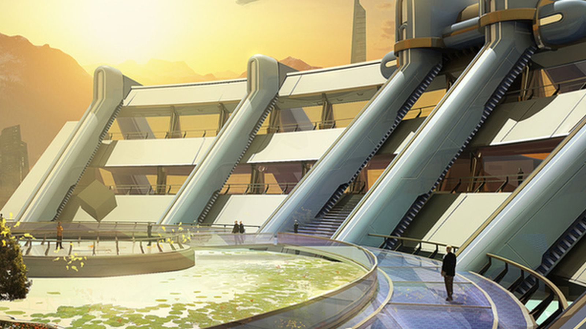
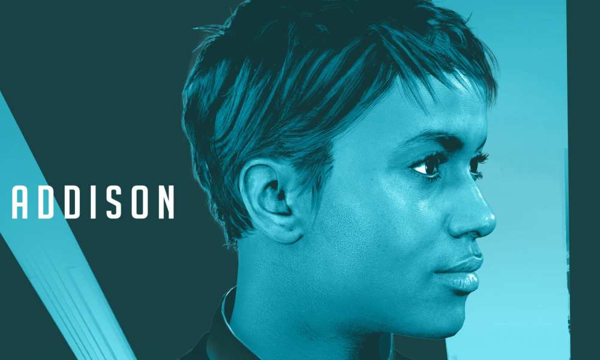
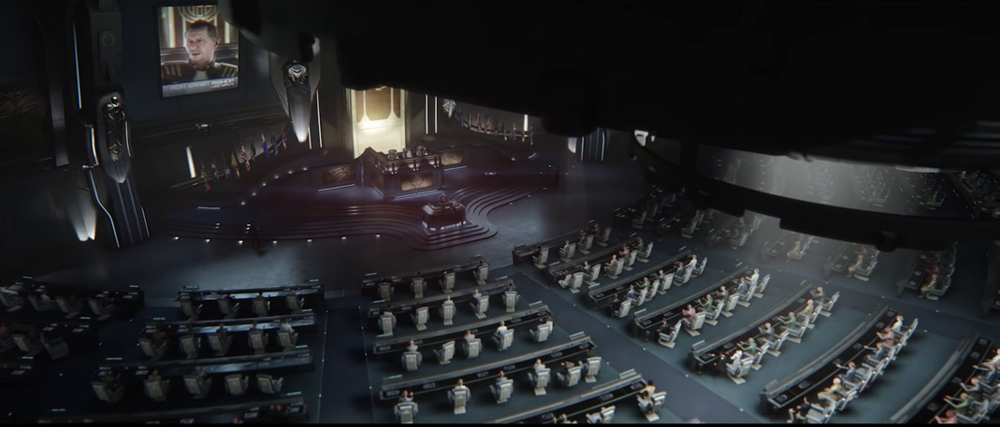
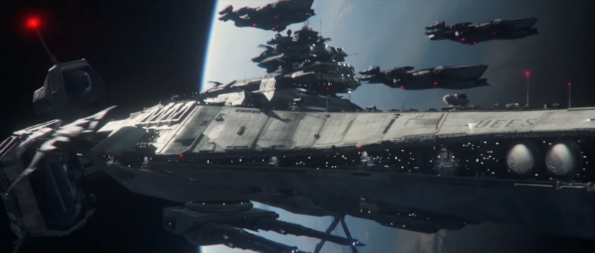
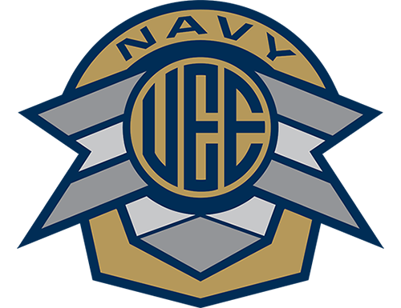
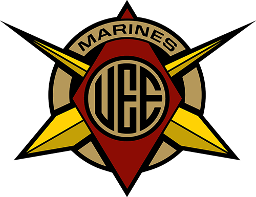
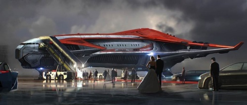
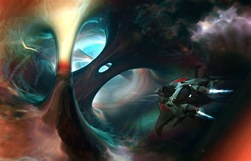
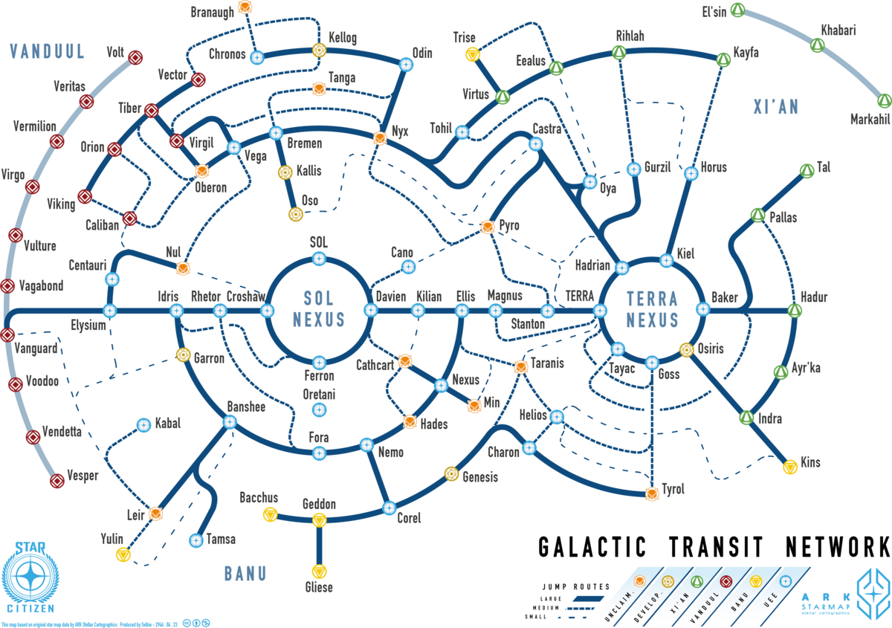

Excurs - Geschichte

2075: Die Sterne rücken ein wenig näher
 Der Tag des 3. Mai 2075 begann wie jeder andere. Rebecca Childress saß am Esstisch und malte, während ihre Mutter die Morgen-Nachrichten im Fernsehen schaute. Es war einer jener Momente, die Rebecca am meisten liebte, wie sie später erinnerte. Dieser Tag jedoch würde ihr im Gedächtnis bleiben, genauso wie jedem anderen auf dem Planeten.
Der Tag des 3. Mai 2075 begann wie jeder andere. Rebecca Childress saß am Esstisch und malte, während ihre Mutter die Morgen-Nachrichten im Fernsehen schaute. Es war einer jener Momente, die Rebecca am meisten liebte, wie sie später erinnerte. Dieser Tag jedoch würde ihr im Gedächtnis bleiben, genauso wie jedem anderen auf dem Planeten.
Auszug aus Rebecca Childress Tagebuch:
„Mama hat heute wieder Eierkuchen gemacht. Ich malte, als Papa auf dem Holo auftauchte. Ich rief nach Mama. Danny fing an zu schreien und rannte um den Tisch herum. Es war so nervig! Doch dann war da Papa, er stand gleich neben dem Präsidenten. Sie redeten über den Weltraum und noch andere Sachen und er sah dabei so wichtig aus. Wir hatten ihn schon lange nicht mehr gesehen. Er trug nun einen Bart. Mama mochte es nicht, aber ich fand, es sah lustig aus. Immer wenn Papa aus dem Haus ging, fragte ich ihn, warum er die ganze Zeit arbeiten musste und er sagte mir immer das Gleiche: Er versuchte, mir die Sterne zu schenken.“
Dr. Scott Childress und sein Team hatten es geschafft, den ersten sich selbst versorgenden Quantum Drive zu entwickeln, der in der Lage war, 1/100 der Lichtgeschwindigkeit zu erreichen. Zum ersten Mal konnte die Menschheit das Sonnensystem mit bis dahin beispielloser Geschwindigkeit entdecken.

2113: Wann gehen wir zu weit?
Editorial from United Times Archive
Published April 21, 2113
von Hannigan Terrell
Falls Sie bis zur vergangenen Woche nicht unter einem Stein gelebt haben, so haben Sie ohne Zweifel von RSIs letzter großer Errungenschaft gehört. Für alle Steinbewohner: Lassen Sie mich wiederholen, worum es geht. Sie geben an, „eine Maschine entwickelt zu haben, die die Atmosphäre eines Planeten in eine nachhaltig atembare Sauerstoff-Umgebung umwandeln kann, die für Menschen atembar ist.“ Kurz gesagt: Sie reden über Terraforming. Ja ganz recht, das Zeug, das Sie bislang nur aus Science-Fiction kannten.
Ich weiß, jedermann ist nun aufgeregt wegen der Möglichkeiten, die sich daraus ergeben. Aber niemand scheint mal kurz Atem zu holen und darüber nachzudenken, was das wirklich bedeutet.
Einmal mehr ist es daher an mir, die Stimme der Vernunft zu sein bei dieser ganzen Technik-Hysterie. Ganz recht, liebe Leser, ich stelle also nun die entscheidende Frage, die sonst offenbar niemand stellt.
Wenn wir einen Planeten terraformen können – warum sollten wir?
Ich gebe Euch eine Sekunde. Denkt darüber nach! Nur weil wir etwas tun können, sollten wir es deshalb auch? Ich weiß, die Gelehrten drüben auf SSNtv werden mich lächerlich machen, machen aus mir einen Technikfeind, aber ich sage Euch etwas: Ich habe kein Problem mit Klonen, ich habe auch kein Problem mit Gene-Coding, um ererbte Schwächen oder Krankheiten zu korrigieren. Diese Dinge sind Erfolge, um das Leben zu verbessern.
Aber wofür ist das hier? Wem hilft es? An welchem Punkt gehen wir zu weit? Ernsthaft, wir reden hier darüber, die gesamte Atmosphäre eines Planeten zu restrukturieren. Und die Planeten, über die wir hier reden, wurden aus einen bestimmten Grund so gemacht, wie sie sind. Wer glauben wir, dass wir sind, dass das Universum will, dass wir Planeten so umgestalten, dass sie uns zum Vorteil gereichen? Wir sind keine Götter und mit dem grundlegenden Zusammenbau eines Planeten herumzuspielen, ist arrogant und gefährlich. Ich weiß, dies wird wahrscheinlich auf taube Ohren stoßen. Die Welt sonnt sich zu sehr in ihrer eigenen Herrlichkeit, aber ich verspreche Euch: Es wird hierbei nichts Gutes herauskommen.

2120: Gebt den Menschen Luft
Nach Jahren der Simulationen und der Tests, hat die Weltregierung beschlossen, ihr Wissen und ihre Ressourcen in ein ehrgeiziges Projekt zu stecken: Den Versuch der ersten Planeten-Umwandlung.
Das Test–Objekt ist der Mars.
Teams von Landvermessern wurden auf die Planeten-Oberfläche gebracht, um topografische Karten zu erstellen, um zu entscheiden, wo die Atmosphären-Umwandler platziert werden sollen und um Bodenproben auf etwaige Verunreinigungen in der neuen Sauerstoff-Atmosphäre zu überprüfen. Es war unsere erste Komplett-Erkundung unseres Nachbarplaneten und die Regierungen der Welt haben wirklich nichts dem Zufall überlassen…

2125: Ein dunkler Tag
Quelle: Sentinel NewsOrg
Uploaded: Mid-Atlantic Servers @ 7:53EST
Autor: Kelsey Forset
START FILE . . .
Heute ist ein dunkler Tag. Im Streben nach menschlichem Fortschritt, tendiert das Buch der Geschichte dazu, die tapferen Männer und Frauen hervorzuheben, die erfolgreich waren. Die Gebrüder Wright, die John Glenns oder Edwin Pierces haben sich dadurch ausgezeichnet, dass sie diejenigen waren, die ihr Ziel erreichten. Aber um das Denkmal jeden Erfolges liegen auch die Körper derjeinigen, die es versucht haben und es nicht schafften.
Heute ist ein dunkler Tag und heute gedenken wir denjenigen mutigen Männern und Frauen, die ihre Leben in der Tragödie verloren haben, die sich heute früh um 04:38 EST auf dem Mars ereignet hat.
Während die Öffentlichkeit noch darauf wartet, was genau passiert ist, weisen unserer Quellen darauf hin, dass eine chemische Fehlkalkulation in den Atmosphären-Umwandlern die neue Atmosphäre instabil werden ließ. „Die Atomsphäre hat nicht gehalten“, sagte ein Regierungsmitglied, das nicht genannt werden will. Der Planet befand sich in der letzten Stufe des Terraforming-Prozesses.
Eine sauerstoffhaltige Umgebung war zwei Wochen zuvor induziert worden. Die Wissenschaftler auf dem Planeten waren nur noch zwei Tage davon entfernt, den Planeten offiziell für sicher zu erklären. Das Vertrauen in die Atmosphäre hatte zur Folge, dass niemand in der Crew seine Sauerstoffgeräte angelegt hatte. Während dies rein technisch eine Verletzung des Arbeitsprotokolls ist, so wurde uns gesagt, gab es für die Bodencrew keinerlei Hinweis darauf, dass mit der Atmosphäre etwas nicht stimmen könnte. Was schließlich auch verantwortlich war – es passierte jedenfalls so schnell, dass niemand dazu in der Lage war, einen Alarm auszulösen oder die die Belüftung der verschiedenen Anlagen auf dem Planeten zu versiegeln.
Ohne Zweifel wird diese Tragödie die bereits lang anerkannten Argumente und die Vorteile des Terraformings wieder in Zweifel ziehen. Die Präsidentin hat heute Morgen in ihrem Blog-Statement bekanntgegeben, dass möglicherweise ein internationales Komitee untersuchen soll, wie es von hier aus weitergehen soll.
„Während ich verstehe, dass das Terraforming Gefühle dafür und dagegen auslöst, sind 4876 Seelen gestorben, während sie daran arbeiteten, die Menschheit vorwärtszubringen. Wir müssen sicherstellen, zu welcher Entscheidung wir auch immer kommen, dass wir uns weiter vorwärtsbewegen, während wir gleichzeitig die Opfer der Tragödie des Mars ehren.“
… end file.

2140: Ein Schiff in jeder Garage
 Hatte die Erfindung des RSI Quantum Drive das Sonnensystem mehr zugänglich gemacht, so war es immer noch die Domäne der Regierungen, der wachsenden Unternehmensflotten und der Super-Reichen. Aber das würde sich bald ändern…
Hatte die Erfindung des RSI Quantum Drive das Sonnensystem mehr zugänglich gemacht, so war es immer noch die Domäne der Regierungen, der wachsenden Unternehmensflotten und der Super-Reichen. Aber das würde sich bald ändern…

2157: Blauer Himmel auf dem Mars
Nach fast vierzig Jahren Versuch und Tragödie ist der Mars offiziell nun als ein Planet mit sauerstoffhaltiger Atmosphäre klassifiziert. Für diejenigen, die bei der großen Mars-Tragödie im Jahr 25 gestorben sind, wurde nun feierlich ein Denkmal eingeweiht. Senator Steven Nguyen war der Hauptredner.
Dies ist die Niederschrift seiner Ansprache:
Mein Bruder Sean liebte es zu bauen. Als wir Kinder waren, war ich derjenige, der Sport trieb und der für den Studentenausschuss antrat. Er hat immer mit Dingen herumgebastelt. Es war nicht ungewöhnlich bei uns Zuhause, dass man heim kam und ein technisches Gerät war auseinandergebaut und auf dem Wohnzimmerboden ausgebreitet. Oder Sean krabbelte in den Ventilationsschächten umher, weil er ein Klickgeräusch gehört hatte. Obwohl er erst zehn Jahre alt war, war er schon so begabt. Vielleicht ist begabt das falsche Wort, weil es nicht nur sein Talent war, sondern vielmehr seine Neugier und sein Vergnügen daran, Dinge auseinander zu nehmen und zu schauen, wie alles zusammen gesetzt war. Als die Jahre voranschritten, haben wir uns auseinander entwickelt.
Er war mein kleiner verrückter Bruder, der mein Zeug auseinandernahm. Wir gingen auf beiden Seiten der Welt zur Schule. Er studierte Ingenieurswesen und Physik, was keine Überraschung war. Ich machte mein Ding. Als Erwachsene haben wir uns regelmäßig getroffen, aber ich würde nicht sagen, dass wir wirklich eng miteinander waren. Mehr wie Bekannte als Brüder. Wir waren einfach zu verschieden. Ich mochte die Phoenix Five, aber er dachte, sie seien nur ein Abklatsch. Ich dachte, das neue Bürgerschaftsprogramm wäre ein guter Weg, um Menschen zu belohnen, die aktiv eine bessere Nation aufbauen wollten. Er dachte, das wäre nur etwas für die Elite. Und so ging es weiter.
Viele Jahre zuvor, als ich meinen ersten Sitz im Distrikt gewann, kam Sean zur Siegerparty. Ich dachte, ein Wahlhelfer musste ihn eingeladen haben. Um ehrlich zu sein, ich hätte es nicht einmal probiert. Einer aus meinem Team sah ihn in einer Ecke stehen. Offenbar fühlte er sich unwohl in der Menge. Er kam nicht einmal herüber, um mit mir zu sprechen. Er schrieb nur eine Notiz und bat jemanden, mir diesen Zettel zu geben.
Dies ist, was darauf stand:
„Hey Stephen. Du sahst aus, als müsstest Du mit einer Menge Leute sprechen. Das wollte ich nicht unterbrechen. Aber ich möchte sagen, Du bist großartig, Mann! Ich weiß, wir zanken und streiten. Aber es gibt mir Hoffnung, dass jemand, der an seine Überzeugung glaubt, in die Regierung geht. Es ist wirklich aufregend und ich freue mich für Dich! Erinnere Dich stets daran, egal welche Häßlichkeiten Dich umgeben. Sei mutig, tapfer, sei Du selbst und dann wird es ok sein.“
Mein Bruder Sean. Sean, der Zerstörer. Sean, der Reparierer. Sean war einer derjenigen, die in der Tragödie von 2125 gestorben sind. Seitdem konnte ich nie wieder eine seiner ärgerlichen Tiraden über Politik oder eine seiner lächerlichen Ausschweifungen über Legierungen oder Sollbruchstellen hören. Es ist ein Trost, dass das Projekt, das meinen Bruder das Leben gekostet hat, nun abgeschlossen ist. Dieses Denkmal, ein kleiner Trost, verglichen mit dem Verlust all dieser Leute, wird ihre Namen für den Rest der Menschheit für immer im Gedächtnis halten. Und wissen Sie was? Vergeben Sie mir meine Unverblümtheit. Ich möchte nicht, dass Menschen auf dieses Denkmal schauen und ruhig und in sich gekehrt sind. Ich möchte, dass die Namen in den Felsen gemeißelt sind, um ein Feuer zu entzünden. Ein Feuer, das uns und die Menschheit herausfordert. Ich möchte, dass die Namen eine Aufforderung für uns alle sind, um uns hervorzutun und um unser Schicksal im Universum zu finden.
Um es in den Worten meines kleinen, dummen Bruders zu sagen: Seid tapfer. Seid ihr selber, Und alles wird gut.

2214: Der Weg des Fortschritts
 Als RSI die nächste Generation des Fusion-Antriebs ankündigte, eröffneten sich neue und aufregende Aussichten für die Raumfahrt – aber nicht jeder war so begeistert.
Als RSI die nächste Generation des Fusion-Antriebs ankündigte, eröffneten sich neue und aufregende Aussichten für die Raumfahrt – aber nicht jeder war so begeistert.
Bailey konnte es nicht glauben. Er saß seit 20 Minuten im Physik-Unterricht und nun erhielt er einen neuen Download. Irgendeine neue Maschinen-Technologie. Als er heute Morgen zur Tür hinaus gegangen war, hatte er schon einen flüchtigen Blick darauf geworfen aber erst jetzt erfolgte das Update der Schulbücher.

2232: Der erste Vorstoß
Die Artemis war ein wahrgewordener Traum. Nach der Ankündigung ein Raumschiff zu bauen, um zum nächsten bewohnbaren Planeten vorzustoßen, flippte die Öffentlichkeit aus. Fremde Welten und erste Kontakte war nicht mehr allein die Domäne von Science-Fiction-Autoren, es wurde aufregende Realität. Das Schiff wurde mit Stasis-Kammern, Terrafroming-Ausrüstung und künstlicher Intelligenz am Steuer ausgerüstet. Fünftausend Seelen bot das Schiff Platz.
Es erfolgte ein Aufruf für Freiwillige.
Niemand spielte die Risiken herunter, von denen es viele gab. Bei einer nachhaltigen Verbrennung mit den neuesten Antrieben würde die Artemis über zweihundert Jahre brauchen, um ihr Ziel zu erreichen. In dieser Zeit kann viel passieren. Trotzdem gab es über eine Million Freiwillige. Ausschüsse filterten die Listen und versuchen, die beste Kombination von Fähigkeiten und Disziplinen zu finden.
Das Folgende sind Auszüge aus „Chariot to the Stars“, dem offiziellen Logbuch zum Launch, basierend auf den kompilierten Flugprotokollen, persönlichen Tagebüchern und Zeugenaussagen.
ZEITSTEMPEL: Start = -0d14h38m13s
Am Vorabend des Starts von Artemis prüfte Captain Lisa Danvers die Schalttafeln unter der Comm-Station auf der Brücke … zum nunmehr dritten Mal.
Arthur Kenlo, Ingenieur, saß auf der Lehne des Captains Stuhls. Er hatte es aufgegeben, herauszufinden, wonach sie suchte. Lisa Danvers hatte immer ein Problem mit großen Schiffen. Sicher, sie hatte schon vorher Transporte geflogen, aber das war etwas anderes. Es gab tausend Dinge, die schief gehen konnten, was wiederum eine Million Funktionen beeinflussen konnte. Es war zum wahnsinnig werden.
“Sind Sie sicher, dass ich Ihnen nicht helfen kann, Captain?”, sagte eine körperlose Stimme, die aus Dutzenden von versteckten Lautsprechern auf der ganzen Brücke zu kommen schien. Es war die KI, hilfreich wie immer. “Nein, mir geht es gut”, sagte Danvers und Kenlo murmelte die Worte mit. Danvers konnte nichts Falsches oder Verdächtiges in den unzähligen Leiterplatten entdecken. Sie hasste die Angst vor dem Flug. Egal was sie tat, es traf sie immer schwer. Sie ersetzte das Panel.
Kenlo wurde munterer.
“Geht es Dir gut?”
“Ja ich glaube schon. Hey Janus? ”
“Ja, Captain?”, antwortete die körperlose Stimme.
“Erzeuge eine weitere Reihe von Notfallaktionen für die Stasis-Kammern.”
“Haben Sie bestimmte Parameter?”
“Nein, nutze deine Vorstellungskraft.”
“Das ist ein Konzept, von dem ich nur ein begrenztes Verständnis habe.”
“Außerhalb der Box. Etwas, an das wir nicht gedacht haben. ”
“Ich werde es versuchen, Captain.”
In dieser Nacht versuchte Janus, der KI-Kern, Vorstellungskraft zu entwickeln.
ZEITSTEMPEL: Start = -0d0h4m21s
Am nächsten Morgen wartete die Welt. Die Freiwilligen waren bereits auf einer Orbitalplattform. Die Ingenieure waren der Meinung, dass es einfacher wäre, sich die Mühe zu ersparen, Startsitze für fünftausend Menschen zu bauen. So waren sie in den vergangenen Wochen in Gruppen dorthin gebracht worden. Heute war der Start der Artemis selbst. Danvers und ihre Kernmannschaft würden sie hochfliegen und dann an der Plattform andocken, um die Zivilisten und alle Last-Minute-Lieferungen abzuholen. NewsOrgs aus der ganzen Welt waren zusammengekommen, um den Moment in jedem erdenklichen Format festzuhalten und alles auf den Bildschirm zu bringen.
Lisa war schon festgeschnallt, die Erschütterungen der letzten Tage schmolzen mit jedem verstreichenden Moment dahin. Sie starrte auf die Hauptprojektionsfläche. Diese zeigte die Vorderansicht des Schiffes. Im Moment war dort nur eine versiegelte Startröhre zu sehen. Sie dachte darüber nach, was dahinter lag, der Himmel. Der Himmel, den sie liebte. Er wartete darauf, dass sie zurückkam.
Danvers ging ihre Preflight-Checklists durch. Sie war gründlich und professionell, aber es ging ihr nicht schnell genug. Die Crew war eingecheckt, alles war grün auf der ganzen Linie. Es folgte ein letzter Check-in mit der Flugkontrolle. Sie waren bereit.
Es war an der Zeit. Vor dem Schiff begann es zu piepsen. Die massiven Metalltore der Abschussrampe entriegelten sich mit schweren Schlägen.
“Captain Danvers, soll ich die Kontrolle übernehmen?“, fragte Janus.
“Nein, ich habe sie.”
“Sind Sie sicher, Kapitän?”
“Ich bin sicher.”
Die Tore begannen sich zu bewegen. “Aber Captain, ich habe einen Fehlerquotienten von 0,002.”
“Zeig mir einfach den Himmel. Ich werde uns dorthin bringen. ”
ZEITSTEMPEL: Start = + 9d5h12m57s
Janus übernahm die Kontrolle und kreiste für eine Woche, nachdem die Besatzung und die Zivilisten in die Stasis eingetreten waren, um nach Fehlern oder Anomalien zu suchen. Es war ein Testlauf dafür, wie das Schiff sich verhalten würde, wenn es seinen Vorstoß ins Unbekannte starten würde. Gäbe es irgendwelche Probleme, konnte die Flugkontrolle den Start abbrechen und das Schiff fernsteuern, wenn es sein musste. Die Flugkontrolle beendete ihre abschließende Bewertung aller Kontrollen. Alles sah gut aus. Justin Cobb, der Missionsdirektor, blickte über die Menge der Techniker, Wissenschaftler und Analysten, die vor ihm saßen.
“Geht es allen gut?”
Jeder nickte.
“Dies ist unsere letzte Chance. Wenn irgendjemand geringste Bedenken hat, so sagt er sie jetzt besser. Es ist mir egal, wie es klingt oder ob Leute im Management ausflippen. ”
Ruhe.
Cobb ließ ein paar Augenblicke verstreichen, nickte, um dann den Kontakt zur Artemis herzustellen.
“Guten Tag.”
“Wie geht es dir, Janus?”
“Ich habe Simulationen durchgeführt. Notfall-Szenarien. Darunter zufällige Stromschwankungen, einen Zusammenstoß mit einem Fremdkörper, einen Kontakt mit neuem, nicht kategorisiertem Gas oder Element oder Kontakt mit feindlichen Organismen. ”
“Irgendwelche Schlussfolgerungen?”
“Ich denke, wir werden alle zufriedenstellen.”
Cobb warf einen Blick auf den ihm am nächsten sitzenden Techniker, der von der Sprache der KI offenbar verwirrt war.
„Du denkst?”
“Ich kann mir vorstellen, dass es gut geht, Mr. Cobb.”
Zweiundzwanzig Minuten später gab die Artemis für siebzig Minuten Vollschub. Es ging über den Rand unseres Sonnensystems hinaus in dieses große Meer des Weltraums hinaus in das stille Schwarz, das uns umgibt.
Und so warten wir, träumen von den Dingen, die sie finden werden, in der Hoffnung, dass wir eines Tages von den tapferen Männern und Frauen, die die Artemis bestiegen haben, hören werden. Als Botschafter der Vereinigten Erde.

2262: Das Neso-Dreieck
Sace wurde zu einem geschäftigen Ort. Schiffe aller Art, föderale, kommerzielle und private, erkundeten die Ränder des Sonnensystems.
Im August 2262 unternahm die Goodman, ein Frachtschiff vom Typ IV mit einer achtköpfigen Besatzung, eine Routineversorgung einer Orbitalplattform bei Neptun. Ungefähr drei Stunden vor dem Ziel zerstörte ein Stück Weltraumschrott den Steuerbordantrieb und brachte das Schiff vom Kurs ab.
Die Goodman trieb mehrere Stunden, bevor die Crew es schaffte, sie zu reparieren. Was als nächstes geschah, wurde von den größten Wissenschaftlern der Welt untersucht – denn das Schiff verschwand spurlos. Untersuchungen der letzten bekannten Position ergaben keine Trümmer, nichts. Die Goodman ist einfach verschwunden.
In den nächsten Monaten verschwanden zwei weitere Schiffe in der gleichen Gegend auf ähnliche Weise. Weitere Untersuchungen wurden eingeleitet, aber auch sie konnten nicht feststellen, was geschah. Schließlich wurde das Gebiet zur Flugverbotszone erklärt.

2271: Ein kleiner Sprung für einen Menschen
JUMPER Rückblick
US/Farbe/123min
Von Kevin Lazarus
Als Global/Nexus im vergangenen Jahr ankündigte, dass es ein weiteres Biopic über den berühmten Astro-Pionier Nick Croshaw veröffentlichen würde, schien es zu absurd. Jeder kennt schließlich seine Geschichte – von seiner unnachgiebigen Erforschung der Raumanomalie, die Schiffe ganz zu verschlingen schien, bis hin zum ersten Mann, der einen Sprungpunkt entdeckt und erfolgreich hindurch navigiert hatte. Wir haben es auf Video gesehen, es wurde besungen, ich bin sicher, dass es jemand gemalt hat, aber diese Sache hier … diese ist nun wirklich außergewöhnlich.
Mit einem Drehbuch des Newcomers Thomas Goss konnten die Produzenten Talente wie Michael Forbe (Croshaw) und Lima Hannigan (Baxter) und Regisseur Ariel Kalil (Requiem’s Run) gewinnen. Es hatte zuvor schon viele Versuche gegeben, diese Geschichte zu erzählen. Nun aber wurde ihr echte Lebendigkeit eingehaucht. Diese Periode von Croshaws Leben bestand zu großem Teil schließlich aus Versuch und Irrtum. Er versuchte zu verstehen, was die Anomalie verursachte und wie man sie dazu brachte, sich zu öffnen. Dies ist ziemlich trockener Stoff, der viel mit Astrophysik und mit Falten in Raum und Zeit zu tun hat. Die Macher des Films haben es nun soweit heruntergebrochen, dass es für jeden zugänglich wird, um die Zuschauer emotional einzubinden, ohne jedoch die intellektuell herausfordernden Aspekte des Themas zu vernachlässigen.
Nachdem es Croshaw gelungen war, die Anomalie zum ersten Mal zu durchqueren, wird der Film zu einer konventionellen Abenteuergeschichte, die rasch auf ihren Höhepunkt zusteuert. Jeder kennt die Gefahren der Navigation durch einen Sprungpunkt. Es ist, als würde man durch ein Asteroidenfeld mit Nachbrennern fliegen. Jetzt können wir im Film nacherleben, wie es sich anfühlen muss: die blendenden Geschwindigkeiten, der Schrecken, aber auch der Rausch sowie das wahnsinnige Hochgefühl des Gleitens an den Rand und schließlich das Herauskommen auf der anderen Seite.
Die Bilder, sobald Croshaw auf der anderen Seite des Sprungpunktes herauskommt, sind tadellos gemacht. Wir alle kennen heute das Croshaw-System und können durch den Film somit nachfühlen, was Croshaw empfunden haben muss, als er es das erste Mal sah.
Der Film ist auf der ganzen Linie erstklassig. William Kurtz’ Musik ist mitreißend und intim zugleich. Der Film wird viele ansprechen, obwohl Kinder die Wissenschaftssprache wahrscheinlich nicht mögen werden. Erhältlich für DVD und Stream ab dieser Woche, es gelten die Standard Upload- und Download-Kosten.

2380: Gemeinsam steigen wir auf
Die Menschheit schien sich sicher und bequem in die Zukunft zu entwickeln. Planeten im Croshaw-System wurden sowohl für die Besiedlung als auch für die Ausbeutung von Ressourcen terraformt. Drei neue Sprungpunkte wurden entdeckt, zwei in Croshaw, einer in unserem eigenen Sonnensystem, so dass die Möglichkeit, in noch mehr Systeme zu expandieren, bald Realität wurde. Die Regierungschefs aus aller Welt kamen zu einem Weltgipfel zusammen, um die nächste Phase der globalen Initiativen im Weltraum und auf der Erde zu diskutieren. Niemand wusste, dass dies zu einer neuen Richtung für die gesamte Menschheit führen würde….
LRO NewsDiv Abschriften
4.23.80, 6:05 CSET
Angela Brevot: Es ist Woche zwei des Weltgipfels, und es gibt Gerüchte, dass sie sich auf eine große Ankündigung vorbereiten. Niemand hat auch nur eine Ahnung davon, worum es bei dieser Ankündigunga geht. Ein Analyst spekuliert, dass die Ankündigung wahrscheinlich nur ein Trick ist, um die Medien dazuzubringen, weiter über den Gipfel zu berichten. So stellen sich die NewsOrg-Crews jeden Tag um 18 Uhr im Zuschauerraum auf und warten, ohne zu wissen, ob es eine Ankündigung geben wird oder nicht. Das geht jetzt schon seit acht Tagen so.
4.23.80, 6:28 CSET
Angela Brevot: Vor etwa dreißig Sekunden betrat ein Assistent den Zuschauerraum und holte die Crews von NewsOrg ab. Er führt uns irgendwo tiefer in den Komplex hinein. Vielleicht ist die Ankündigung doch kein Werbegag. Wie Sie sehen können, werden wir in die….da ist die Generalversammlung. Alle Delegierten aller Regierungen der Welt sind noch hier. Was ist hier los?
 4.23.80, 6:42 CSET
4.23.80, 6:42 CSET
[DELEGIERTER IVAN TSANG IST AUF DEM PODIUM, FLANKIERT VON VERTRETERN DER GLOBALEN SUPERMÄCHTE]
Ivan Tsang: Vielen Dank für Ihre Geduld. Wenn alle bitte anfangen können zu senden, werden wir anfangen.
(Pause)
Guten Abend. Es ist eine aufregende Zeit in der Geschichte der Menschheit. Wir stehen an der Schwelle zu einer neuen Ära, in der die Erforschung und Kolonisierung des Weltraums nicht nur eine Möglichkeit, sondern eine Gewissheit ist. Fortschritte in der Terraforming-Technologie und im Astro-Design lassen uns immer weiter hinaus in den Kosmos reisen. Wissenschaftler haben im Croshaw-System ein paar Sprungpunkte entdeckt, die uns, wenn sie einmal durchquert sind, noch mehr Planeten und Systeme öffnen werden, die wir erforschen können.
Ziel dieses Gipfels war es, eine Frage zu stellen. Es war nicht, wo gehen wir von hier aus hin? Es war, wie gehen wir dort hin? Eine Expansion auf dieser Ebene kann nicht mit konkurrierenden nationalen, politischen und sogar kommerziellen Interessen gelingen. Unsere persönlichen Streitigkeiten scheinen unbedeutend angesichts der Weite des Raumes, der vor uns liegt.
Deshalb sind die Vertreter der Erde auf diesem Gipfel zusammengekommen. Wir haben debattiert und diskutiert und sind nun zu dem Schluss gekommen, dass wir, wenn wir in den Weltraum aufbrechen wollen, dies als eine einzige, einheitliche Rasse tun müssen. Deshalb kündigen wir die Absicht an, für diesen und alle Planeten ein einziges Leitungsgremium zu bilden.
Dies sind die Vereinten Nationen der Erde.
Jeder der Regierungschefs vor Ihnen wird mit einem Referendum in sein Land zurückkehren. Es liegt noch viel Arbeit vor uns. Es gibt viele Probleme, die es zu lösen gilt. Wir haben einen langen Weg vor uns, um eine stabile, funktionierende Regierung dieser Größenordnung aufzubauen. Aber wissen Sie, wir werden es schaffen. Wir werden fair sein. Wir werden vereint sein. Danke und gute Nacht.
In den nächsten Jahren diskutierten die Länder unter- und miteinander. Obwohl es nur wenige zugaben, wusste doch jeder, dass ein Aufbruch ins All im Alleingang nicht möglich war. Erst als die globalen Supermächte begannen, sich für die UNE zu engagieren, begannen die übrigen Länder, diesem Beispiel zu folgen. Die Menschheit hatte immer noch ihre Auseinandersetzungen, aber als es nun um das Universum ging, war sie vereint.

2438: Hallo
United Times/Tribune NewsOrg Archiv
Zuerst geplant: 12. Juni 2438
Von Shelley-Feld
Seit wir ins Universum aufgebrochen sind, fühlten wir uns schrecklich allein. Trotz der Entdeckungen der Sprungpunkte, trotz neuer Sternensysteme, fühlt es sich schrecklich einsam an in der unendlichen Leere. Doch jetzt ändert sich alles. Denn jetzt wissen wir es.
Um ca. 3:13 SET suchte Vernon Tar, ein sechsunddreißig Jahre alter Explorer, nach unentdeckten Sprungpunkten im Davien-Syste. Er trieb durch die stille Schwärze, lediglich begleitet durch das Brummen seiner Tiefenscanner, als er plötzlich einen Treffer hatte.
„Wenn du so lange in der Stille unterwegs bist, erschreckt dich jede Art von Ping”, sagte Tar über DataCom, “also überprüfte ich mein Display und, naja, es war kein Sprungpunkt.”
Es war ein Schiff.
Ursprünglich dachte er, es sei nur ein weiterer Explorer oder ein verlorenes Schiff, schließlich erkannte er es kaum.
„Ich wollte es mir fast nicht ansehen. Ich war mir sicher, dass es ein anderer Jumper hier draußen war, der dasselbe wie ich suchte.” Erst als das Schiff näher kam, wurde ihm klar, was er sah: das erste Mitglied einer fremden Rasse. „Nachdem ich meinen Schock überwunden hatte, wusste ich, dass es eine heikle Situation war. Und so haben wir uns erst einmal nur eine Weile angestarrt.”
Tar kontaktierte die UNE SOC und gab seine Koordinaten weiter. Eine Delegationspartei wurde zusammengestellt und eilte zum Treffpunkt. Militärische Kräfte waren ebenfalls vor Ort, falls sie sich als feindlich erweisen sollten. Das Treffen dauerte etwa vierzig Minuten. Die UNE-Truppen mussten auf eine Antwort der Alien-Rasse warten.
Wissenschaftler sind derzeit dabei, Programme zur Übersetzung und Kommunikation zu entwickeln, aber nach Jahrtausenden der Zivilisation können wir alle sagen, dass wir den Ersten Kontakt mit der Anmut und Würde einer wirklich fortgeschrittenen Rasse gehandhabt haben. Von hier aus wissen wir jetzt mit Sicherheit, dass es eine andere Rasse gibt, eine andere Zivilisation, mit der wir teilen und wachsen können.
Vorfallbericht
Eingereicht bei H-SOC Central
Autor: GEN Neal Socolovich 1
Nur autorisierte Benutzer
Re: Alien-Kontakt
Heute Nachmittag um 3 Uhr wurde der erste Kontakt mit einer fremden Zivilisation im Davien-System hergestellt. Hier ist ein Überblick, was passiert ist: Vernon Tar suchte das System nach Sprungpunkten ab, als seine Systeme einen Kontakt aufnahmen. Er nahm an, dass es sich nur um einen weiteren Entdecker handelte. Er eröffnete daher das Feuer, bevor er schließlich erkannte, dass es sich tatsächlich um ein außerirdisches Schiff handelte. Tar bekam Angst und meldete es. Wir isolierten die Kommunikation, um die Situation unter Kontrolle zu halten und eilten so schnell wie möglich hinaus und setzten sofort das Standard-Eindämmungsprotokoll und die Mediensperre in Kraft.
So gut wir konnten, schien das Alien (nachher JERRY) erschüttert und verärgert darüber zu sein, von Tar beschossen worden zu sein. Wir versuchten, Jerry mit Pantomimetechniken zu beruhigen. Außerdem haben wir die TECH-Div benachrichtigt, um mit der Arbeit an einer Art Dolmetschergerät zu beginnen. Jerry ließ sie etwas von seiner Sprache aufnehmen. Wir haben auch flüchtige Scans seines Schiffes durchgeführt. Wir haben zwar nichts Verdächtiges gefunden, aber die Daten sind beigefügt.
Anschließend haben wir einige Informationen an die Presse weitergegeben und einen unserer Mitarbeiter für ein Interview mit Tar eingesetzt, um sicher zu stellen, dass er auf unserer Linie bleibt. Wir glauben nicht, dass Tar ein Problem sein wird. Wir erklärten ihm, dass, wenn er schweigt, er der Held ist, der den ersten Kontakt hergestellt hat, und nicht der Idiot, der fast den ersten interstellaren Krieg auslöste. Tar verstand das sofort.
In der Zwischenzeit haben wir Scan-Arrays nach Davien geschickt, um die Augen offen zu halten, werden aber in den nächsten Tagen oder Wochen weitere Kontakte erwarten. Ich bin sicher, sie sind genauso neugierig wie wir.
Sie waren neugierig. Zwei Wochen später erschien eine ausländische Delegation im Davien-System und nahm Kontakt mit Socolovich auf. In den nächsten Monaten arbeiteten die beiden Rassen daran, die Kommunikationsbarriere zu überwinden. Als wir endlich miteinander interagieren konnten, erfuhren wir, dass sie die Banu waren – eine kollektive Rasse von Planetenstaaten, die auch gerade erst begonnen hatte, das Universum zu erforschen. Im Oktober 2438 unterzeichnete Socolovich und die anderen Delegierten das erste Interstellare Friedens- und Handelsabkommen mit den Banu.

2460: Frei atmen
Die Erde ist überfüllt.
Durch Expansion und Terraforming gibt es nun ein riesiges Territorium für die Menschheit, um sich auszubreiten, aber es gibt immer noch große Vorbehalte in der Öffentlichkeit. Erst mit der “The Air You Breathe”-Kampagne von RSI begannen die Menschen das Universum zu erobern.
Nachrichtenaustausch zwischen:
Mark Carl [Willet & Ngo Werbung]
Francois Kelsen[RSI, Corp]
Re; Anzeigenkampagne
MC: Hey Francois, die Rechtsanwälte haben den Vertrag gecheckt und das Designteam hat die NDA’s unterschrieben, sodass es so aussieht, als wären wir im Geschäft.
FK: Hervorragend. Wann können wir mit dem Brainstorming beginnen
MC: Wir stehen Ihnen jetzt zur Verfügung. An welche Art von Kampagne haben Sie gedacht?
FK: Nun, ich weiß nicht. Sagen Sie es mir.
MC: Ich denke, wir spielen mit dem Gefühl von Chancen. Die Erde wird immer die Erde sein, aber wir haben die Ressourcen ausgereizt.
FK: In der Tat.
MC: Sie gehen auf einen neuen Planeten. Die Luft wird sauberer…
FK: … alles ist neu. Ich meine, wann haben Sie das letzte Mal auf einem Feld gesessen?
MC: Einem echten?
FK: Sehen Sie, was ich meine?
MC: Es ist eine Chance. Die Chance auf eine Wiedergeburt. Darauf, neu anzufangen. Es geht um Möglichkeiten. Die Aufregung, nicht zu wissen, was einen erwartet.
FK: Aber ich will nicht, dass es so klingt, als wäre es wild. Es gibt Zivilisation und Technologie.
MC: Richtig. Aber da ist noch Platz …
FK: Richtig. Ich will, dass die Leute verstehen, dass sie ein neues Leben haben können. Das bietet uns das Universum. Eine Chance, neu anzufangen. Und wir wollen ihnen die Möglichkeit geben, diese Chance zu nutzen.

2516: Eine bessere Erde
Bis zum Jahr 2516 war die UNE auf zwölf Systeme angewachsen. Während Sprungpunkte und Datenrelais eine schnellere Reise zu den Systemen am Rande des erforschten Raums ermöglichten, begann die Erde sich ziemlich weit weg zu fühlen. Wei-Yin Song, einer der führenden Entdecker für das UNE-Projekt „Far Star“, stieß schließlich auf eine Entdeckung in einem neuen System und entwarf eine Botschaft mit einer interessanten Idee.
An: UNE High Council
CC: General Kelso Trask, Senatorin Patricia Oat
RE: KÜNFTIGES SYSTEM
Sehr geehrter Damen und Herren,
wie Sie wissen, ist es meine aktuelle Aufgabe, neue Systeme für zukünftiges Terraforming zu suchen und zu klassifizieren. Das neueste System (342A), das mein Team und ich entdeckt haben, befindet sich in einem Bereich, der als „Zusammenfluss“, als Nexus, bezeichnet werden kann. Wir haben bereits vier weitere Sprungpunkte entdeckt, zusätzlich zu dem, durch den wir hier ankamen und mit der Möglichkeit eines fünften am Horizont.
Ich füge eine aktuelle Karte des betreffenden Systems mit den noch zu scannenden Zonen und den bereits entdeckten Sprungpunkten bei. Einer der Planeten (342A.03M) ist eine Super-Erde. Scans und Scouting-Missionen bestätigten das Vorhandensein einer natürlich sauerstoffhaltigen Atmosphäre, einheimischer Vegetation, riesiger Ozeane und gemäßigter Klimata. Tief in der südlichen Region entdeckte ein Explorer-Team Reste einer besonderen Felsformation, die aussieht, als sei sie künstlich angeordnet worden. Wir haben aber aber noch keinen Hinweis auf intelligentes Leben gefunden.
Kurzum, ich möchte vorschlagen, dass 342A.03M als Basis für das Terraforming und die Expansion in die angrenzenden Systeme eingerichtet wird. Das Team hat den Planeten Terra benannt, um seine Ähnlichkeiten mit der Erde zu unterstreichen. Alle unsere aktuellen Daten und Erkenntnisse sind in diesem Comm-Paket enthalten.
Ich lade Sie ein, sich selbst davon zu überzeugen.
Mit freundlichen Grüßen,
Wei-Yin-Lied
Chefinspektor/Ingenieurin
Projekt Far Star
Der UNE-Kongress billigte den Plan, die Operationen des Ostsystems von Terra aus zu zentralisieren. Im Laufe der Jahre wuchsen die Städte und es entstand eine neue Kultur.

2523: Die drei Säulen
 ANSAGER: Willkommen zurück zur heißesten Sendung über aktuelle Themen auf dem Spectrum. Mit unserem Panel, Kyle Black, Politologe, Sheldi Chen, Bestsellerautor und Sprecher, und Ben Feller, Futurist. Es ist Zeit für ein weiteres … SHOWDOWN!
ANSAGER: Willkommen zurück zur heißesten Sendung über aktuelle Themen auf dem Spectrum. Mit unserem Panel, Kyle Black, Politologe, Sheldi Chen, Bestsellerautor und Sprecher, und Ben Feller, Futurist. Es ist Zeit für ein weiteres … SHOWDOWN!
KYLE: Also reden wir über diese neue Bombe der UNE, sie werde sich umstrukturieren…. was ist das jetzt wieder? UPE?
BEN: Vereinigte Planeten der Erde.
SHELD: Was für ein lächerlicher Name.
BEN: Kommen Sie schon. Es macht absolut Sinn. Wir haben ein paar dutzend Planeten, die sich erdumspannenden Populationen nähern, mit mehr am Horizont. Diese Menschen müssen vertreten sein. Und ernsthaft, die Vereinten Nationen der Erde sind etwas überholt.
KYLE: Nach allem, was wir sagen können, und sie haben ein fünfzehnhundertseitiges Dossier veröffentlicht, das die Änderungen umreißt, sieht so aus, als ob das Setup ziemlich das gleiche ist.
BEN: Es ist mehr als das. Der Kongress wird sich nun aus Delegierten zusammensetzen, die die Planeten und nicht mehr die alten, veralteten Nationen vertreten. Es ist ein besseres System.
KYLE: Was halten Sie von diesen neuen Aushängeschildern; ein Hoher Sekretär, der die Infrastruktur verwaltet, ein Hoher General für das Militär und ein Hoher Anwalt für das Recht?
BEN: Wenn eine Regierung die schiere Anzahl von Wählern verwalten muss, die –
SHELD: Klingt nach einer tollen Einrichtung für den Faschismus.
BEN: Ist das Ihr Ernst?
SHELD: Jedes Mal, wenn du die Macht von den vielen in die Hände einiger weniger konzentrierst, wird jemand lernen, sie zu missbrauchen. Und außerdem, wie zum Teufel hat Robert Thorn es geschafft, High Advocate zu werden? Der Mann ist ein Idiot und sollte von einem nicht beförderten Mob aus dem Amt geworfen werden. Er ist nicht mal ein Bürger.
KYLE: Oh, stopp, es wurde immer wieder bewiesen, dass er-
SHELD: Seine Akte könnte manipuliert worden sein. Haben Sie eine Ahnung, wie einfach das ist?
KYLE: Sehen Sie, wenn es so einfach ist, in DataBanks einzubrechen, dann ist die Staatsbürgerschaft aller verdächtig. Wie kann ich zum Beispiel wirklich wissen, dass Sie ein Bürger sind?
SHELD: Hey, ich habe meine Zeit in der Air Force verbracht und zweimal den notwendigen Zivildienst geleistet, um meine Staatsbürgerschaft zu verdienen. Schlagen Sie es nach, Sie <Piep>
BEN: Richtig, Ihre Eltern haben überhaupt nichts beigetragen….
SHELD: Halten Sie Ihren <Piep> Mund.
BEN: Sie <PIEP>
ANSAGER: Bleiben Sie in der Nähe für mehr SHOWDOWN! Nach diesen lokalen Werbespots.

2530: Die Galaxie wird größer
Es war wie einst beim Goldrausch auf der Erde. Die „planetarischen Goldsucher“ verzweifelten daran, ihren Anspruch auf nicht terraformten Welten durchzusetzen. Die meisten folgten den Anweisungen der Regierungen, andere nicht.
Gaia Planet Services etwa versuchte, einen Planeten ohne Genehmigung zu terraformen. Dabei stellte sich heraus, dass der Planet nicht unbewohnt war. Eine neue Rasse, die später als das Xi’An Imperium bezeichnet werden würde, tauchte plötzlich auf, während die Terraformer ihre Arbeit aufnahmen. Unnötig zu sagen, dass sie etwas beunruhigt waren. Die Xi’An nahmen die gesamte Crew gefangen. Einen, den Vorarbeiter Charles Baxter, ließen sie als Geste des guten Willens schließlich frei.
Auf der Erde versammelten sich unterdessen High-Secretary Cho, High-General Volder und High-Advocate Machado mit einem ausgewählten Unterausschuss der Senatoren, um eine klare Einschätzung darüber zu erhalten, was geschehen und wie mit dem Xi’An zu verfahren war.
HIGH-SECRETARY CHO: Wenn alle bereit sind … Mr. Baxter, beginnen Sie bitte. Erzählen Sie uns von den Ereignissen dieses Tages.
BAXTER: Ich wurde vom Anwalt der Firma beraten, dass ich…
HIGH-ADVOCATE MACHADO: Herr Baxter, dies ist keine strafrechtliche Verhandlung. Wir versuchen einfach, ein klares Bild davon zu bekommen, was passiert ist. Es gibt immer noch zweihundertfünfundsiebzig Ihrer Kollegen, die von einer fremden Zivilisation festgehalten werden. Jede Hilfe, die Sie uns heute geben, wird berücksichtigt werden, wenn die Krise gelöst ist.
[Baxter konferiert mit seinem Anwalt]BAXTER: Wir haben nach Baugrund gesucht, um die Ausrüstung aufzustellen. Es waren drei Transporte hinab auf den Planeten geplant, sodass wir erwarteten, bald Schiffe zu hören. Ich war auf einem Bergrücken, als das erste Schiff in Sicht kam. Ich wusste sofort, dass es nicht unseres war. Menschlich, meine ich. Es sah aber auch nicht wie ein Banu-Schiff aus. Sie wissen ja…
HIGH-SECRETARY CHO: Bitte bleiben Sie beim Thema.
BAXTER: Nun, das nächste, was wir wussten, war, dass sie überall um uns herum waren. Schiffe tauchten plötzlich aus allen möglichen Richtungen auf.
HIGH-GENERAL VOLDER: Haben Sie keine Scans vor der Landung gemacht?
BAXTER: Nicht wirklich. Ich meine, ich glaube nicht.
HIGH-GENERAL VOLDER: Denken Sie nicht, dass das klug wäre, bevor Sie versuchen, einen Planeten zu terraformen?
BAXTER: Sie wissen nicht, wie es da draußen ist. Wenn man zu lange wartet, kommt eine andere Corp und baut die Mineralien ab – und zwar schneller ab, als man blinzeln kann.
HIGH-GENERAL VOLDER: Wir schätzen Ihre soziologische Sicht durchaus, Mr. Baxter. Aber wir brauchen Fakten, keine Übertreibung, wenn wir die Geiseln befreien wollen.
HIGH-SECRETARY CHO: General, wir sind noch nicht zu dem Schluss gekommen, dass eine Militäraktion notwendig ist.
HIGH-GENERAL VOLDER: Ich verstehe, aber wir müssen einen Plan haben, nachdem wir handeln können, falls die diplomatischen Lösungen nicht fruchten.
HIGH-SECRETARY CHO: Einverstanden. Fahren Sie fort, Mr. Baxter.
…ENDE EXCERPT
Die UPE-Militärs errichteten eine Sperrzone rund um den Sprungpunkt. Es dauerte fünfzehn Tage, um ein Kommunikationssystem zu entwickeln, um mit den Xi’An zu sprechen. Damit begann eine angespannte Verhandlungsphase. Die Xi’An waren sehr akribisch in ihren Forderungen. Als die Geiseln freigelassen wurden, waren mehr als siebenundfünfzig Tage vergangen. Obwohl die UPE es geschafft hatte, einen Krieg zu vermeiden, blieben die Beziehungen zu den Xi’An angespannt.

2541: Es ist schrecklich voll in meinem Himmel
 Da die UPE ihr kühles Verhältnis mit den Xi’An in der Nähe von Terra im Osten des Empires aufrechterhielt, waren wir in den Systemen im Westen der Erde immer noch unangefochten. Das aber sollte sich bald ändern.
Da die UPE ihr kühles Verhältnis mit den Xi’An in der Nähe von Terra im Osten des Empires aufrechterhielt, waren wir in den Systemen im Westen der Erde immer noch unangefochten. Das aber sollte sich bald ändern.
Die Tevarin lagen technologisch etwa hundert Jahre hinter den Menschen zurück. Sie brachen gerade erst von ihrer Heimatwelt Kaleeth auf. Der Tevarin hielten sich an ein starres Kriegerethos, das Pflicht und Treue als Tugenden ehrte. Sie waren keine blutrünstige Spezies, sie ehrten einfach die Kunst des Kampfes.
UPE Systembezeichnung: Elysium
Datum der Entdeckung: 15. November 2541
Jump-Point NavDirections U/L: Kellar Lench[Pilot/n.C.]
Systembewertung: Auf Elysium IV gibt es eine einheimische Art, die sich Tevarin nennt. Obwohl sie empfindsam und intelligent sind, haben sie sich technologisch nicht zu unserem Niveau entwickelt. Wir empfehlen, dass wir Kontakt aufnehmen und sie in die UPE eingliedern. Es ist eine wunderbare Gelegenheit, die Tevarin in unsere Zeit zu bringen.
Die UPE hat die Tevarin erreicht. Sie waren jedoch nicht daran interessiert, diplomatische Beziehungen einzugehen oder gar unsere Technologie anzunehmen. Sie waren lediglich an unseren Systemen interessiert. So begann der erste Interspezies-Krieg, wie die meisten Kriege begannen – nämlich als Auseinandersetzung um ein Territorium.
Als der Tevarin-Krieg zu schwellen begann, befürchtete das Militär, dass der Konflikt im Westen einen Xi’An-Angriff im Osten begünstigen und einen Angriff einleiten könnte. Glücklicherweise erregte ein junger und ehrgeiziger Offizier, Ivar Messer, öffentliche Aufmerksamkeit, als er sich in der Schlacht von Idris IV. hervorhob. Die UPE erkannte dies schnell und machte Messer zum Gesicht des Tevarin-Krieges.

2546: Ein Anführer erhebt sich
Alyssa Jamali kam zu spät. Sie war letzte Nacht am Tisch eingeschlafen, als sie an ihren Chemie-Hausaufgaben gearbeitet hatte. Jetzt musste sie ihre Poly-Sci-Aufgabe auf dem Weg zum Unterricht fertigstellen. Generaloberst Messer hatte bei einer Gedenkveranstaltung für die Opfer des Bombenanschlags auf Cestulus gesprochen und ihr Lehrer, Herr Kent, wollte eine einseitige Zusammenfassung der Rede.
Diktat-Start:
Alyssa Jamali
Politik-Wissenschaft/Kent/45Bcf
Zuordnung: Messer Rede
Die Systeme fallen auseinander. Seit dem Ende des Krieges erleben wir eine neue Art der Bedrohung. Dieser Kampf wird jedoch nicht auf Schlachtfeldern oder zwischen Großkampfschiffen ausgetragen. Das war die Botschaft vor acht Monaten. Sechs Terroranschläge allein im vergangenen Jahr hatten alle von der Vorstellung kuriert, dass die Niederlage der Tevarin zum Frieden führen würde. Die Leute wollten Antworten, aber vor allem wollten sie das Gefühl haben, dass die Regierung die Kontrolle hatte. Sie bekamen weder das eine noch das andere.
Die Gerichtsbarkeit hat die Täter nie gefasst. Sie wusste nur, dass die Bomben zum Teil aus Xi’An-Technologie hergestellt worden war. Unterdessen diskutierte die Regierung nun die passende Vorgehensweise – bis hin zur Untätigkeit.
Also fielen die Systeme auseinander. Die Menschheit brauchte einen Führer. Die Lösung? Das Schaffen einer neuen Position, die des „Prime Citizen“, die entscheidende Stimme in einer überforderten Regierung.
Bürger aller Systeme begannen, sich für dieses neue Amt zu bewerben. Jede Woche schien es, als würde ein neuer Kandidat die gleichen Versprechungen machen. Das ging monatelang so. Als die Wahl näher rückte, schlug Generaloberst Messer seinen Namen als Kandidat vor. Er sprach gestern Abend bei einer Gedenkfeier für die Opfer des vierten Terroranschlags.
„Menschen. Bürger. Ich komme heute als Gläubiger zu Ihnen. Ich glaube, dass wir eine große und lebendige Geschichte haben. Ich glaube, dass es noch so viele weitere wunderbare Dinge im Universum zu entdecken gibt. Ich glaube an die Menschheit.
Aber es gibt Feinde, die uns vernichten wollen. Das vereitelt unseren Aufstieg. Unsere Feinde wollen, dass wir von den Sternen zurückfallen. Die bösartigen Angriffe auf unsere Systeme sind nur der Anfang. Als Soldat, der den Schrecken des Krieges gesehen hat, sage ich das nicht leichtfertig. Wir müssen uns schützen. Wir müssen unsere Familien beschützen. Unsere Zukunft. Unsere Fähigkeit, das einzufordern, was uns zusteht.
Ich will keinen weiteren Krieg. Zu viele Söhne und Töchter, Ehemänner und Ehefrauen sind bereits im tiefen Vakuum und auf unfruchtbaren Planeten verloren gegangen. Aber ich sage: Ich würde jedes System und jeden Sprungpunkt mit Schilden und einem tausend Kilometer dicken Draht ausrüsten, wenn wir dafür nicht mehr Menschenleben verlieren würden.
Ich war schon immer ein Soldat der Menschheit. Gebt mir die Chance, Euch zu beschützen. Gebt mir die Chance, die Bedrohungen und die Gewalt von Spezies, die nicht so zivilisiert sind wie wir, von uns fern zu halten, damit wir unseren rechtmäßigen Platz in der Galaxie einnehmen können.
Glaubt an mich, wie ich an Euch glaube. Glaubt an die Menschheit!“
Generaloberst Messer sprach mit einer Überzeugung, die es leicht machte, ihm zu glauben. Kurz gesagt: Ich denke, er hat Recht. Es gibt ein inhärentes Problem mit den drei Machtverhältnissen. Es ist besser, diesen Diskurs in Friedenszeiten zu führen, wir leben aber nun einmal in einer gefährlichen Zeit. Entscheidungen müssen manchmal schnell und effektiv getroffen werden. Ich weiß, das klingt wie der erste Schritt in Richtung Diktatur, aber unser Regierungssystem ist ja immer noch vorhanden. Die Methode, die sie vorschlagen, hält immer noch den Hohen Sekretär, General und Gericht und sogar den Senat aufrecht, aber sie alle beraten den Prime Citizen, der dann die Entscheidung trifft.
Oder wie Generaloberst Messer nach seiner Bewerbung für das Amt des Prime Citizen sagte:
„Jedes Schiff braucht einen Kapitän.”

2610: Tränen des Feuers
Bentley Nationalgalerie
Selbst-Tournee Malerei Info
Stück: “Tränen des Feuers”
Künstler: Aaron Fring
Erstellt: 2610
 Vor Ihnen steht eines der eindrücklichsten Bilder aus dem Zweiten Tevarinkrieg (2603-2610). Es wurde im Jahr 2633 in das Archiv der UPE aufgenommen. Der Künstler, Aaron Fring, wurde 2578 auf Ferron von Max und Mary Fring, einem Lehrer und einer Pilotin, geboren. Als Kind litt er unter einem Anfall von Kilos’ Krankheit und war über ein Jahr lang bettlägerig. Während dieser Zeit verbrachte er seine Zeit mit zeichnen. Als junger Mann trat Fring als Feldmediziner in die Expeditionsarmee ein. Er reiste zu vielen Systemen, bevor er sich schließlich entschied, sich auf Elysium IV niederzulassen.
Vor Ihnen steht eines der eindrücklichsten Bilder aus dem Zweiten Tevarinkrieg (2603-2610). Es wurde im Jahr 2633 in das Archiv der UPE aufgenommen. Der Künstler, Aaron Fring, wurde 2578 auf Ferron von Max und Mary Fring, einem Lehrer und einer Pilotin, geboren. Als Kind litt er unter einem Anfall von Kilos’ Krankheit und war über ein Jahr lang bettlägerig. Während dieser Zeit verbrachte er seine Zeit mit zeichnen. Als junger Mann trat Fring als Feldmediziner in die Expeditionsarmee ein. Er reiste zu vielen Systemen, bevor er sich schließlich entschied, sich auf Elysium IV niederzulassen.
Tagsüber betrieb Fring eine kleine Medizin-Station und begann nachts wieder zu malen. Oft war er stundenlang in der Landschaft unterwegs und malte alles, was er sah. Während er als Landschaftskünstler vielversprechend war, hinterließ er nie einen großen Eindruck in der Kunstszene. Obwohl er sich mehr wünschte, war Fring mit seiner Praxis und seinem Hobby zufrieden.
Im Jahre 2603 tauchte ein neuer Tevarin-Kriegsherr, Corath’Thal, aus den Tiefen des Kosmos mit einer wiederaufgebauten Tevarin-Kampfflotte auf und startete seinen ersten Angriff gegen die UPE-Systeme. Die einzige Mission der Tevarin war es, Elysium IV, ihre ehemalige Heimatwelt, zurückzuerobern. Die Siedlungen auf Elysium IV eilten zu den Waffen, um ihre Häuser zu verteidigen. Fring versuchte sich anzuschließen, aber die gleiche Krankheit, die ihn als Kind geplagt hatte, tauchte wieder auf und hinderte ihn daran, seine Pflicht zu tun.
Am 24. Juni 2610 SET erlitt Corath’Thal bei der berüchtigten Schlacht von Centauri eine katastrophale Niederlage durch die Squadron 42. Da die Schiffe seine Flotte schnell entweder zerstört oder aufgegeben wurden, brachte Corath’Thal seine verbliebenen treuen Piloten zusammen, um Elysium IV in einem Akt der Verzweiflung anzugreifen. Obwohl sie weitere 70 Prozent Verluste erlitten, erreichte die Flotte schließlich die Atmosphäre ihrer alten Heimatwelt.
Corath’Thal und seine Piloten senkten absichtlich ihre Hitzeschilde und tauchten in die Atmosphäre ein. Aaron Fring war an diesem Abend unterwegs. Die Symptome seiner Krankheit waren abgeklungen. Er wanderte durch die Landschaft, wie er es schon oft getan hatte. Auf dem Kamm eines Hügels sah er schließlich etwas Spektakuläres: Die Tevarin-Flotte verbrannte in der Atmosphäre, als sie zu Boden raste.
Aus der Kunst heute (2613):
“Wie bei den meisten Kunstwerken habe ich nicht versucht, den Moment genau so darzustellen, wie er war. Das habe ich in der Vergangenheit immer getan, aber das war mehr als das Visuelle. Es gab so viel Komplexität in diesem Moment. Ich wollte nur versuchen, das Gefühl dieses Bruchteils der Zeit einzufangen. So schön und so traurig.”
Aaron Fring

2638: Aufruf zur Unabhängigkeit
Terra Gazette – Ausgabe 3.12.38
Terra Gouverneur entwirft Gesetzentwurf für Terraner Souveränität
Von Viola Füller
Eine politische Kundgebung für die Wiederwahl des Bürgermeisters von New Benzi, Nadir Padwani, förderte einen erstaunlichen neuen Vorschlag zu Tage. Es war Abenddämmerung und die Spendensammlung machte Fortschritte, als Assan Kieren auf das Podium stieg. Nur wenige wussten, dass er im Begriff war, eine sprichwörtliche Bombe zu zünden.
Um ca. 5:15 Uhr Ortszeit enthüllte Assan Kieren Pläne, ein Referendum für die Bevölkerung von Terra und die benachbarten Systeme zu fordern, um die Unabhängigkeit von Imperator und UEE zu erreichen.
„Der Imperator lebt in einer Zeit, in der außerirdische Zivilisationen etwas sind, dass man fürchten muss. Diejenigen von uns, die hier leben, wo die Banu und Xi’An Nachbarn sind, wo wir sie jeden Tag sehen, wissen jedoch, dass sie nicht der Feind sind. Sie sind Wesen wie wir, ihre Kultur kann anders sein, ihre Motivation kann anders sein, aber sie versuchen nur sicher zu leben. Der Imperator hält sie gerne auf Distanz, aber ich glaube nicht, dass wir diesen Weg weiter gehen sollten. Wie Carson einmal sagte: „Wenn du einen Krieg vorwegnimmst, wirst du früher oder später einen haben.” Kurz gesagt, ich glaube, dass sich die Erde zunehmend von den Realitäten der heutigen Zeit verabschiedet hat, dass sie stattdessen politische und soziale Instabilität in allen Systemen verursacht. Das ist kein Aufruf zu Waffen und keine Einladung zu Konflikten. Alles, worum ich bitte, ist, einen Dialog zu eröffnen.”
Unnötig zu sagen, dass anschließend nicht mehr viele Leute über die Wiederwahl des Bürgermeisters sprachen….
(Fortsetzung)
United/Tribune NewsOrg -5.4.38 Ausgabe
Terras aufrührerischer Gesetzentwurf scheitert
Von Raymond-Rolle
Der Antrag auf Separation des berüchtigten terranischen Gouverneurs Assan Kieren hat heute das öffentliche Referendum nicht bestanden. Wie erwartet, erkannten die treuen Bürger von Terra und seinen Nachbarsystemen, dass Kierens Plan für die Souveränität eine schlecht durchdachte, unrealistische Idee war, die zu einer instabilen Zukunft für sie und ihre Kinder führen würde. Sie gingen in Scharen zu den Wahllokalen und sagten: Nein. Wir sind nicht einverstanden. Wir glauben nicht, dass die UEE uns im Stich lässt. Man kann nur hoffen, dass Kieren die Botschaft bekommt.
Terra Gazette – Ausgabe 9.24.38
Gouverneur von Skandal geplagt
Von Viola Füller
Egal, wohin sich Assan Kieren zu wenden scheint, stets hagelt es neue Vorwürfe. Seit seinem Antrag auf Souveränität vor sechs Monaten musste der Gouverneur Vorwürfe von Untreue über Drogenabhängigkeit bis hin zu Korruption entkräften. Heute veröffentlichte der Gouverneur eine Erklärung an alle NewsOrgs.
„All diese Behauptungen sind unbegründet und versuchen einfach, vom eigentlichen Problem abzulenken. Der Imperator und seine Gefolgsleute haben die Autorität der Regierung zerstört, indem sie den klaren Willen des Volkes ignoriert haben, sich von einer korrupten und abscheulichen Regierung zu emanzipieren.”
Kieren erklärte weiter, dass er Beweise für Manipulationen und Betrug durch Mitarbeiter auf der Gehaltsliste der UEE erhalten hat. Diese Beweise wurden in das laufende Verfahren aufgenommen und werden nun Teil seines laufenden Bundesverfahrens gegen Imperator Messer III sein.
Terra Gazette – 11.4.38 Ausgabe
Xi’An/Human Terrorist Network enthüllt
Von Raymond-Rolle
Der Feind ist unter uns! Am frühen Morgen kündigten Advocacy Agents die Auflösung einer massiven, behördenübergreifenden Undercover-Operation an. Es gab dutzende Verhaftungen, weitere stehen aus. Unbenannte Quellen innerhalb der Regierung behaupten, dass die Xi’An-finanzierten Terroristen verschiedene Positionen in Regierungs- und Corp-Strukturen infiltriert hätten. Während wir noch auf eine offizielle Erklärung warten, haben uns mehrere Quellen bestätigt, dass der ehemalige Gouverneur von Terra, Assan Kieren, beteiligt sein könnte. Der gleiche Gouverneur, sofern Sie sich erinnern, der verschwand, nachdem die Bürger ihn nach seinen verzweifelten und paranoiden Versuchen, Unordnung und Anarchie in die Systeme zu bringen, aus dem Amt vertrieben hatten.

2681: Verbrannte Erde
Im Westen, im Orion-System, bricht die Kommunikation zu einer kleinen Siedlung plötzlich ab. Es dauert Wochen, bevor jemand daran denkt, nachzuforschen. Sie finden schließlich ein Township in Asche und die Advocacy entsendet sofort einen Agenten zur Untersuchung.
EREIGNISBEWERTUNG
Standort: Dell Township/Wasserreinigung Siedlung/Armitage Planet/Orion System
SAIC: Rhedon Lamr
Die ersten Bilder deuten auf wiederholte Angriffe der Luftwaffe mit mehreren, vermutlich kleinen Schiffen hin. Kein offensichtlicher Einsatz von großkalibrigen Waffen oder Bomben. Brandspuren am östlichen und südwestlichen Stadtrand deuten darauf hin, dass die Angreifer wahrscheinlich dort gelandet sind. Wir haben Proben von verbrannter Erde zur Analyse ins Labor geschickt. Die Winkel der abgegebenen Schüsse bestätigen die Theorie, dass die Angriffe aus mehreren Richtungen kamen. Der Comm-Tower wurde beschädigt. Es sah aber nicht gezielt aus. Seltsam. Wenn es Raider gewesen wären, wäre nicht ihr erstes Ziel die Kommunikation?
Auf dem Boden fanden wir seltsame Patronenhülsen, die in der ganzen Stadt verstreut waren. Sieht in der Herstellung nicht menschlich aus. Analyse folgt. Weiterleitung an Advocacy-Agenten mit Kontakten im Banu Protectorate.
Die Angreifer waren gründlich und gingen von Haus zu Haus. Sie töteten alles und jeden. Ganze sechshundertachtunddreißig Einwohner der Siedlung wurden umgebracht, außer einer Persion: John Phillips, 38 Jahre alt. Ein Farmer. Unsere Analysten reden derzeit mit ihm. Wir liefern eine vollständige Datei, wenn wir alle Informationen haben.
Diebstahl und Raub scheinen die Hauptmotivation gewesen zu sein, aber es gibt eine Inkonsistenz bei den fehlenden Gegenständen. Manchmal wurden Wertgegenstände zurückgelassen, während scheinbar nutzlose Gegenstände mitgenommen wurden.
Agent Vasquez hat eine kleine CommLink-Kamera entdeckt, die während des Angriffs alles aufgenommen hat. Ich habe das Filmmaterial durchgesehen, doch das meiste zeigt nichts Nennenswertes. Auf einem Bild jedoch sieht man offenbar kurz einen der Angreifer, wenn man nah heran zoomt.

2758: Nicht in Nottingham
United/Tribune NewsOrg Archiv
Veröffentlicht: 14. Jänner 2758 SET
Vanduul Attack!0
Von Edward Coss
Die Bürger von Boro dachten, sie wären bereit. Sie besaßen eine Orbitalverteidigung und Tiefraumscanner. Aber wenn eine Vanduul-Kriegsflotte zuschlägt, musst du mehr als bereit sein. Um 17:23 Uhr Ortszeit begann der Angriff. Glücklicherweise wurde sofort Alarm ausgelöst. Lokale Milizen aus der Umgebung des Systems bemannten ihre Schiffe, um die Jäger zu verfolgen, aber erst als die UEE-Flotte eintraf, flohen die Vanduul zurück in die Dunkelheit des Weltraums. Der Vanduul-Angriff dauerte nur 27 Minuten. In dieser Zeit wurden vierzehn Seelen ausgelöscht und Millionen verloren ihr Eigentum.

2789: Kalter Krieg
UEE 33. Flotte, C-Wing, SS LightHammer
XOS LOGBUCH – 5.29.2789
 06:12: Officer’s Meeting. Gingen die COMSEC-Updates der letzten sechs Stunden durch. Nichts Aufregendes. Bericht über Schüsse auf eine Reaper-Klasse im Kieler System. Eine Deckkanone hat wegen eines Computerfehlers eine Fehlfunktion.
06:12: Officer’s Meeting. Gingen die COMSEC-Updates der letzten sechs Stunden durch. Nichts Aufregendes. Bericht über Schüsse auf eine Reaper-Klasse im Kieler System. Eine Deckkanone hat wegen eines Computerfehlers eine Fehlfunktion.
07:24: Zum Dienst gemeldet. Haben systemweite diagnostische Waffenchecks durchgeführt. Sind auf der ganzen Linie klar.
11:15 Uhr: Nills (Comms) klang, als würde er krank werden. Alles war ruhig, also schickte ich ihn auf die Krankenstation. Sein zweiter Offizier war ein guter Ersatz.
12:32 Uhr: Endlich etwas zu essen. Langeweile macht sich in der Crew breit. Manchen geht das Temperament durch. Werde mich an den Commander wenden und versuchen, Lösungen zu finden, um Stress abzubauen.
15:34 Uhr: Ich weiß nicht, wo ich anfangen soll. Ich arbeitete an der Bewertung meiner Kampfsimulation des Xi’An-Trägers, als Shaw mich auf die Neuigkeiten auf dem Spectrum aufmerksam machte. Offenbar hat Senator Akari von Terra unabhängig einen Vertrag mit den Xi’An ausgehandelt. Es soll um 19 Uhr in Kraft treten. Die Leute halten es für einen Witz. Vielleicht hat ein Aktivist die NewsOrgs geknackt? Wäre nicht das erste Mal. Wir können diesen Vertrag nicht einhalten, oder? Sollen wir Akari wegen Hochverrats verhaften? Die Nachricht würde die Erde tagelang nicht erreichen, also wusste niemand wissen, was zu tun ist. Ich war genauso verblüfft wie alle anderen, also informierte ich den Kommandanten, der sich sofort auf der Brücke meldete.
16:20: Alle fliegen immer noch blind. Alle Schiffe sind in höchster Alarmbereitschaft. Auf der Suche nach jeder Art von Aggression. Bisher nichts. Könnte ein Xi’an-Trick sein.
19:02: Die Xi’An Mirror riefen ihre Jägerpatrouillen zurück, schalteten ihre Waffen aus und zogen sich zurück. Ich schätze, wir sind nun im Frieden?

2792: Die Flut steigt.
Tag Eins, Null Stunde
SSN/CAtv Nächtliche Nachrichten
 Guten Abend, das sind die SSN/CAtv Nightly News für das Terra System. Ich bin Lawrence Ren. Die Systeme sind begeistert von der bevorstehenden Hochzeit zwischen Val Messer und Celia Carter, so dass wir heute Abend einen Blick auf die Designer werfen, die ausgewählt wurden, um die Braut und den Bräutigam….
Guten Abend, das sind die SSN/CAtv Nightly News für das Terra System. Ich bin Lawrence Ren. Die Systeme sind begeistert von der bevorstehenden Hochzeit zwischen Val Messer und Celia Carter, so dass wir heute Abend einen Blick auf die Designer werfen, die ausgewählt wurden, um die Braut und den Bräutigam….
<<<<<<<< SYSTEMUNTERBRECHUNG – UNBEKANNTER URSPRUNG >>>>>>
Menschen aller Systeme. Ziehen Sie sich Ihren Schleier von den Augen und lernen Sie zu sehen. Garron II war eine sich entwickelnde Welt mit einer Vielzahl von Arten. Wir sagen „war“, weil sie es heute nicht mehr ist. Der Imperator und seine Gefolgsleute haben den Planeten terraformt und alles getötet, um ihre unersättliche Gier zu stillen.
TAG EINS,
STUNDE DREI
POLIZEIKOMMANDOABWEHR
FELDEINHEIT: Hier ist Einheit B234. Wir haben eine unbefugte Versammlung in Gitter 14G. Ich brauche zusätzliche Bodeneinheiten. Luftunterstützung in Bereitschaft.
STUNDE FÜNF
Feldeinheit: Holt die Wache! (undeutliches Geschrei und Schüsse) Holt die Armee. Schnappt euch, wen ihr kriegen könnt, und bringt sie her! Wir werden überrannt. (off-mic) Du! Halt die Klappe und halte sie auf … jetzt!
COMM VERLOREN
ZWEITER TAG
VON: Admiral Kale, UEE HIGH COMMAND
Terroristen versuchen, die Erde anzugreifen. Sie müssen den gesamten Sprungpunktverkehr stoppen. Ich will, dass die Zugänge in jedes einzelne System abgeschaltet werden. Sie sind berechtigt, tödliche Gewalt auf jedes Schiff anzuwenden, das sich nicht umleiten lässt.
Unterschrieben,
Admiral Tal Kale
AuthCode: GHISJD_HUDFJD_12
TAG DREI
BEHÖRDENÜBERGREIFENDES MEMO
ZU: HOHE FÜRSPRECHERIN KELLER
VON: NARA VALE, AAC –
RE: VERSCHWÖRER KOMM-VERKEHR
Unsere Kräfte haben aufgedeckt, wie die Aufständischen trotz der Beschlagnahme der CommRelays immer noch zwischen den Systemen kommunizieren. Kommunikationsmeldungen werden in einzelne Datensegmente zerlegt und in die militärische Kommunikation eingebettet. Unsere Analysten versuchen herauszufinden, wie sie genau auf unser System zugegriffen haben. Leider wird es einige Zeit dauern, bis sie die Sicherheitslücken gefunden und geschlossen haben, aber hoffentlich wird dies dazu beitragen, sie lange genug zu stören, um die Systeme wieder unter Kontrolle zu bringen. Wird bei Bedarf aktualisiert.
TAG 18
LUTHER FREIER PRESSE-FLYER
Veröffentlicht im Croshaw System
FEUER AUF DEMONSTRANTEN ERÖFFNET”
Brüder und Schwestern. Wir haben gerade erfahren, dass vor zwei Tagen Militär- und Polizeikräfte das Feuer eröffnet und über zweihundertunddreißig friedliche Demonstranten in Vale getötet haben. Wir haben versucht, zivilisiert zu sein. Wir haben dem Drang widerstanden, die Gewalt dieser despotischen Regierung mit Gewalt zu beantworten, aber jetzt sagen wir: Schluss damit! Wir werden nicht mehr nur mit unseren Ideen Krieg mehr führen. Nun werden wir den Imperator von seinem Thron reißen. Also, Brüder und Schwestern, wehrt Euch gegen die teuflische Faust Eures Unterdrückers.
TAG 22
Neues United NewsOrg Archiv
Veröffentlicht am 3. Mai 2792
“A NEW DAWN”
von Decklin Farwahl
„Wir sind aus einem Alptraum erwacht.” Das waren die Worte des neuen Imperators Erin Toi gestern nach der Bekanntgabe der Gefangennahme von Imperator Messer XI. Es ist in der Tat ein ganz neuer Tag. Auch bei dieser NewsOrg, lange ein inoffizielles Sprachrohr des Imperators, sind wir endlich in der Lage und ermutigt, die Wahrheit zu schreiben, ohne dass uns die UEE-Zensoren über die Schulter schauen.
Kaum zu glauben, dass der Vorfall auf Garron II das Pulverfass war, das alles zum Einsturz brachte. Sicherlich war dies nicht der einzige Katalysator. Es gab Vorfälle, die darauf aufbauten. Von der Tapferkeit des Senators Akari bis zu den Aktivisten, die all die Jahre trotz Inhaftierung oder Tod Bündnisse schmiedeten.
Abgesehen von der Einführung von Amtszeitbeschränkungen für den Imperator arbeitet Toi nun mit neu gewählten Senatoren zusammen, um die alten Positionen des Tribunals wiederherzustellen. Der neue Hohe Generalsekretär, der Hohe Sekretär und der Hohe Advokat werden unter der Position des Imperators arbeiten, aber mit der Macht, sie zu entmachten, sollte ein anderer Despot erneut versuchen, die Kontrolle zu übernehmen.
Wir sind aufgewacht. Obwohl der Tag, vor dem wir stehen, unbekannt ist, haben wir gesehen, wie weit wir fallen können. Also müssen wir sicherstellen, dass jeder Schritt, den wir machen, ein Schritt des Aufstiegs ist.

2795: Eine sanftere Menschheit
Das Fair-Chance-Gesetz
- Grundsätze
- Bezeichnung der sich entwickelnden Arten
- Terraforming und Bedingungen
- Ressourcen für den Umweltschutz
- Gerichtliche Überprüfung und Strafverfolgung
Abschnitt I
Grundsätze
Artikel 1
Das Ziel dieses Gesetzes ist der Schutz des Lebens und des Wohlergehens von Arten auf Planeten, die sich noch nicht entwickelt haben, aber die vernünftige Fähigkeit zur Evolution besitzen. Niemand darf einer Spezies ohne triftigen Grund Schmerzen, Leiden oder Schaden zufügen.
Abschnitt II
Bezeichnung der sich entwickelnden Arten
Artikel 2
Nach der Entdeckung eines neuen Planeten und/oder Systems wird ein unabhängiges Gremium, bestehend aus UEE-Vertretern, Exobiologen und Corp-Ingenieuren:
- nicht-invasive Scans und Bewertungen auf jedem Planeten im System durchführen, um zu verstehen, ob sich das Leben bereits entwickelt hat
- alle Berichte dem UEE Senatskomitee für Expansion und Entwicklung zusenden
- die ökologische Unbedenklichkeit eines jeden Planeten überwachen, der sich nach Abschluss zwischen dem unabhängigen Gremium und dem Unterkomitee zum Schutz der Entwicklung von Arten entwickelt.
Artikel 2a
- Das Gremium wird ein System von Kriterien entwickeln und vorlegen, um festzustellen, was als “sich entwickelnde Art” eingestuft wird.
- Der UEE-Unterausschuss für Expansion und Entwicklung ist ermächtigt, im Einvernehmen mit dem Imperator und dem Senat mit Zustimmung des Hohen Sekretärs Verordnungen zu erlassen.
- Er kann insbesondere eine Welt als ein Heiligtum einzustufen. In welchem,
- alle indigenen Lebensformen von jeglicher menschlicher Beteiligung unberührt zu lassen sind
- jeder Versuch, Ressourcen, seien sie biologisch oder mineralisch, zu terraformen oder zu gewinnen, strafrechtlich verfolgt wird, wie in Abschnitt V dargelegt;
- mit Zustimmung und Hilfe des Oberkommandos militärische Mittel zur Aufrechterhaltung der Heiligkeit der geschützten Welt umzuleiten sind.
- Er kann insbesondere eine Welt als ein Heiligtum einzustufen. In welchem,
Abschnitt III
Terraforming Artikel und Bedingungen
. . . wird fortgesetzt

2800: Die neutrale Zone
Zu Beginn des 29. Jahrhunderts lud der neu gewählte Imperator Marshall Leon Vertreter des Xi’An Imperiums, des Banu Protektorats sowie eine Delegation von Tevarin zu einer Galafeier auf einer Orbitalplattform ein. Es wurde auch versucht, die Vanduul einzuladen. Diese Versuche waren aber nicht erfolgreich. Imperator Marshall Leon beruhigte die riesige Menge und sprach:
„Meine Damen und Herren. Willkommen.
Das ist ein Wort, das nicht viel mit der Menschheit in Verbindung gebracht wird. Wir wissen, dass wir in diesen dunklen Jahrhunderten intolerant waren. Wir wissen, dass wir misstrauisch waren. Wir waren grausam. Aber unsere Zivilisation hat ein Sprichwort, das tausende von Jahren zurückreicht: Menschen verändern sich. Und es ist wahr, Menschen können sich ändern. Wir können uns ändern, weil wir den Fehler unserer Wege gesehen haben. Wir können uns ändern, weil wir wollen.
Benannt nach dem biblischen Schiff, bauten wir diese Arche als Gefäß für Raum und Zeit. Ein Ort, um mehr über alle Rassen zu erfahren, über die entdeckten und die noch unentdeckten. Ein Ort, der nicht an einen Planeten oder eine Spezies gebunden ist, denn ihn auf einem Planeten zu platzieren bedeutet, dass er zu der Spezies gehört, die ihn bewohnt. Nein, die Arche muss uns allen gehören. Wir bieten diese Arche dem Universum als Ort des Studiums und der Begegnung an. Die Arche soll als politisch neutrale Zone fungieren, in der sich Vertreter treffen können, um Probleme durch Diskurs zu lösen.
Ich bin stolz, diese Türen zu öffnen und bitte Sie alle, sie mit der großen und bunten Geschichte zu füllen, die jede einzelne Spezies zu bieten hat. Möge diese Arche als Zeugnis und stolze Aufzeichnung des Lebens stehen, das wir und alle vor uns alle gelebt haben.“

2872: Projekt Archangel
 Neues United NewsOrg Archiv
Neues United NewsOrg Archiv
Veröffentlicht: 3.5.2872
“Synthworld”
Von Peter Marx
Wir stehen an der Schwelle zum Fortschritt. Das war die Stimmung heute Morgen im Senat, als der Imperator seine Ankündigung machte. Die Regierung enthüllte schließlich das Projekt Archangel, über das bereits seit Wochen in den Nachrichtenkreisen gemutmaßt wird.
Kurzum, das Projekt Archangel ist eine von der UEE geleitete Initiative, um einen Planeten buchstäblich von Grund auf neu aufzubauen. Die Menschheit hat endlich eine Lösung gefunden, die das komplizierte moralische Minenfeld des Terraformings vermeidet. Wir müssen keine bereits existierenden Planeten mehr umwandeln. Jetzt können wir sie bauen. Obwohl die Technologie noch nicht komplett zu Ende entwickelt ist, glauben die Wissenschaftler, dass sie in der Lage sein werden, noch zu unseren Lebzeiten eine Prototyp-Welt aufzubauen.
Die Auswirkungen haben sich mittlerweile bereits in Wissenschaft, Politik und sogar im sozialen Bereich niedergeschlagen. Xi’An Emperor Kr.ē gab sogar ein Statement heraus: „Es ist sehr ermutigend. Meine Leute werden die Entwicklung des Projekts mit großem Interesse verfolgen.”
Wenn sie perfektioniert würde, würde die Synthie-Welt helfen, die Schande zu beseitigen, die die Menschheit nach drei Jahrhunderten des ungezügelten Imperialismus zu tragen hatte. Der Imperator beendete seine Rede, indem er alle Wissenschaftler aus der Banu- oder Xi’An-Zivilisation einlud, die Entwicklung hautnah mitzuerleben: „Wir wollen diese Technologie nicht für uns behalten. Die Fähigkeit, Welten zu bauen, sollte für alle Kulturen frei sein, so dass es nie wieder nötig sein wird, um so etwas Triviales wie Land zu kämpfen.”

2920: Die Geldgrube
TERRA GAZETTE NEWSORG ARCHIV
URSPRÜNGLICH VERÖFFENTLICHT: 5.38.2920
“Finanzieller Sprungpunkt”
Von Kali Hanks
Da draußen ist eine Raumanomalie. Es ist eine Art Sprungpunkt, den aber kein Pilot jemals durchfliegen wird, weil er nur Geld hineindurchlässt, das anschließend nie wieder gesehen wird. Ich rede natürlich vom Synthwelt-Unsinn. Es ist fast fünfzig Jahre her, seit sie das Projekt Erzengel angekündigt haben, und offen gesagt, was haben wir bis heute bekommen?
Für mich scheint es, als wären wir der künstlichen Schaffung einer Welt nicht näher als damals, als es noch Versprechen und Hoffnung waren. Die einfache Wahrheit ist, dass dieser Versuch, eine Synthworld zu bauen, zu Lasten aller anderen Welten geht. Und wir haben eine Regierung, die so verzweifelt ist, dass sie bereit ist, sogar das Militär und die Infrastruktur leiden zu lassen, um sich das Projekt weiter leisten zu können.
Ich verstehe es, das tue ich wirklich. Sie bauen das wegen all der Rassen, die während der Terraforming-Ära ausgelöscht wurden. Es ist eine tolle Idee, sicher, aber genug ist genug. Ich denke, fünfzig Jahre Misserfolg sollten ein guter Indikator dafür sein, dass wir etwas anderes ausprobieren sollten.
Jedes Jahr bekommen wir neue Zusicherungen, dass die Wissenschaftler angeblich „neue Fortschritte” machen. Dass sie endlich herausgefunden haben, wie man den Wachstumsprozess stabilisieren kann. Doch was haben wir nach all der Zeit? Eine sich verschiebende instabile Planetenmasse.
Wir müssen jemanden an die Macht bringen, der den Mut hat, Stop zu sagen. Entweder muss jemand diese Politik durchkreuzen und den Stecker ziehen oder der Rest der Systeme wird damit zusammenbrechen. Das ist vielleicht nicht populär, aber ich garantiere, dass die Leute genauso denken. Es war die große Idee der Erde, die schrecklichen Dinge, die sie während der Messer-Ära getan haben, wieder gutzumachen. Wir in Terra haben ein reines Gewissen, denn unsere Vorfahren haben es geschafft, sich von der Scheußlichkeit dieses Zeitalters zu distanzieren. Wenn die Erde will, dass dieses lächerliche Projekt ihr Gewissen reinigt – gut. Aber ich verstehe nicht, warum wir mit diesem Schiff untergehen müssen. Vielleicht ist es Zeit, uns auf uns selbst zu besinnen.

2928: Eine neue Kampagne
 An: UEE-Unterausschuss für Frequenzgenehmigung
An: UEE-Unterausschuss für Frequenzgenehmigung
Kelos Costigan Wahlspot
TRT: 30 Sek.
Prod: Martin Balish
Kommerzieller Typ: A/V/NPS
AD BEGINS. V/O und Bilder:
Ein Budget, das außer Kontrolle gerät. Die Zukunft des Synthworld-Projekts in Frage gestellt. Vanduul-Angriffe auf dem Vormarsch in den westlichen Systemen. Probleme für uns alle. Es ist schwer, den Überblick zu behalten, wenn man versucht, eine Familie durchzubringen. In Zeiten wirtschaftlicher Instabilität wollen sie nun einen Imperator, der das Schiff wieder auf Kurs bringt.
Dieser Kandidat ist Kelos Costigan.
Als Wirtschaftsstratege mit mehr als zwei Jahrzehnten Erfahrung hat Kelos dutzenden Welten geholfen, die technologische Gleichheit zu erreichen, die für die meisten von uns selbstverständlich ist. Die in seiner zweiten Amtszeit als Generalsekretär verordnete Politik brachtedas höchste Wachstum seit siebenunddreißig Jahren. Er hat die Erfahrung und das Wissen, um die Menschheit aus den roten Zahlen heraus und wieder in die schwarzen Zahlen zu bringen.
Ende Titel/Text:
Bitte durchsuchen Sie Kelos Costigan, um mehr über seine Politik zu erfahren. Diese Botschaft wurde unter der Zustimmung von Kelos Costigan Campaign erstellt. UEE-Organisationscode: #5985938GH

2934: Ein Träumer träumt
Brian Wieters
EBook-Bericht
Frau Ngo, Klasse 5
“Burning Sky: A Squadron 42 Adventure”.
In der Pause las ich Burning Sky. Es drehte sich um Squadron 42. Die Geschichte spielt im Jahr 2910, als ein Haufen Vanduul-Kriegsschiffe ihren Träger angriffen. Die Hauptfigur war Lieutenant Terrence Nolan. Er kam aus einer kleinen Stadt im Elysium-System, ähnlich der, in der mein Cousin lebt. Er trat der Flotte bei, anstatt zur Schule zu gehen, weil er die Sterne sehen wollte. Es gab eine gute Szene, in der er draußen auf den Feldern stand und in den Himmel blickte und sich fragte, was da draußen wohl alles sein würde. Er wollte sehen, was niemand je zuvor gesehen hatte. Gibt es zum Beispiel Aliens, die wir noch nicht kennen? Daran habe ich nie gedacht. Wenn ich Pilot bin, will ich nur einen Nebel sehen. Einen großen. Ich denke, das wäre das Maximum.
Nach der Flugschule wurde Lt. Terrence Nolan zunächst in die östlichen Sektoren versetzt. Er war Teil einer Patrouille an der Grenze zu den Xi’An. Er war ziemlich gelangweilt, weil nichts passierte. Dann, in einer Schicht, sah er plötzlich ein kleines Transportschiff, das von Piraten verfolgt wurde. Obwohl es vier Piraten gab und Lt. Nolan allein war, griff er an. Es war verrückt und sein Schiff wurde in die Luft gejagt, aber er schoss drei Piraten ab, bevor weitere auftauchten. Damit rettete er den Transport. Danach wurde Nolan beglückwünscht – und doch von seinem Kommandanten heruntergeputzt. Er war wütend, weil es dumm war, es allein mit vier Piraten aufzunehmen. So wurde Nolan in die Squadron 42 eingezogen. Dort mögen sie diese Art von Dummheit.
So wurde Lt. Nolan zurück in die westlichen Systeme versetzt. Jetzt ist er Teil der Staffel. Während der Rest der Flotte von der Vanduul wegläuft, suchen sie stets den Kampf. Sie sind das Einzige, was zwischen unseren Systemen und ihren Jägern steht. Ihr Kommandant ist diese kluge, zähe Dame namens Aria Reilly. Sie hat ihr ganzes Leben lang gekämpft, seit ihre Stadt von Jägern niedergebrannt wurde. Ihr Träger flog an den Siedlungssystemen vorbei in den nicht beanspruchten Raum. Sie waren auf der Jagd.
Nach zwei Wochen auf dem Träger schien es, als ob niemand Lt. Nolan mochte. Sie hielten ihn alle für einen Schwächling. Aber am nächsten Morgen wurde ihr Schiff von einem Haufen Vanduul Scythes überfallen. Lt. Nolan und die anderen Piloten sprangen in ihre Schiffe, um sie zu bekämpfen. Die Schlacht dauerte sechs Stunden. Die Kämpfer drehten sich durch den Raum und versuchten sich gegenseitig in die Luft zu sprengen, während der Träger einen Vanduul-Zerstörer bekämpfte. Es sah aus, als würden sie verlieren, aber dann übernahm Lt. Nolan das Kommando über die noch lebenden Piloten und kämpfte noch härter. Sie haben nicht aufgegeben, egal was passierte.
Das Lesen dieses Buches hat Spaß gemacht. Es war etwas langweilig vor den Kämpfen, aber ich bin froh, dass ich dabei geblieben bin. Mein Vater sagt, dass er sich daran erinnern kann. Als Kind liebte auch er die Squadron 42. Ich hoffe, dass ich eines Tages wie Leutnant Nolan bin, wenn ich Pilot werde. Ich denke, das sollte jeder lesen. Das ist mein Bericht.“
2950
Heute.
Excurs - UEE & Regierung

Als die Menscheit in das Sonnesystem aufbrach, wusste sie, dass sie für große Dinge bestimmt war. Während sie noch kleinere Differenzen hatte, vereinte sie die Expansion ins Universun dennoch als eine Spezies. Planeten wurden terraformt, un wachsendem Ressourcenbedarf gerecht zu werden, so dass die uberbefolkerung der Erde bald kein Problem mehr war. Die Menscheit schloss sich zusammen, um sich den monumentalen Herausforderungen zu stellen, die vor ihr lagen.
Auf der Reise stiess die Menschheit auf neü ausserirdische Zivilisationen. Einige waren freundlich gesinnt, wie zum beBeispiel die handelsorientierten Banu - andere hingegen nicht. Eine stolze Kriegerrasse, bekannt als Tevarin, lOESte den ersten und zweiten interstellaren Krieg der Menschheit aus. Das Xi'an-Inperium unterhielt mit den Menschen eine kühle Beziehung.
Der Kampf ums überleben führt die Menschheit schliesslich auf einen dunklen Pfad. Ein brilliantervund manipulativer Soldat namens Ivar Messer schürte Angst, um sich schliesslich als erster Imperator der Erde aufzuschwingen und die bis dahin unabhängigen Planeten zu einem Empire zu formen. Hunderte Jahre regierte die Dynastie der Messers das Vereinigte Empire Empire der Erde mit Härte und Kontrolle, bis das Volk aufstand, um die despotischen Herscher zu stürzen und die korrupte Regierung in eine Institution des Volkes zu wandeln.
Heute wird die UEE von Senatoren regiert, die von Bürgern aus dem ganzen Empire gewählt werden, wärend das Militär die Grenzen des Empires mit rieseigen Kanpfschiffen schützt. Gleichzeitig gedeiht der Handel zwischen den Systemen und Spezies. Mit dem Ende des Jahrhunderts zeichnen sich jedoch neü Probleme am Horizont ab, die viele dazu veranlassen, sich zu fragen, ob die UEE weiterhin überleben kann.
Das Jahr 2950
Im Jahr 2950 also heute, leben die Menschen auf mehr Welten in mehr Systemen als zu irgendeinem anderen Zeitpunkt in der Geschichte. Unternehmen der Xi'an operieren offen im vom Menschen besiedelten Raum und neü Handelsabkommen sehen noch mehr Möglichkeiten vor.Zum ersten Mal überhaupt wird ein Tevarin in den Senat gewählt. Menschen haben eine bessere Chance als je zuvor, ein erfolgreiches und Glückliches Leben zu führen. Aber das soll nicht so bleiben.Die Grenzen des Empires werden von den Vanduul belagert und der Grossteil der millitärischen Macht der UEE widmet sich der Kriegführung. Dies belastet den Haushalt der UEE, der durch massive Projekte wie die Synthworld, ein ehrgeiziges Experiment zur Schaffung einer künstlichen neün Welt, ohnehin unter Druck ist. Während sich das Empire bemüht, über die Runden zu kommen, gewinnen kriminelle Organisationen an Stärke und es wird mehr auf Milizen und private Söldnergruppen vertraut, um die Sicherheit im Empire zu gewährleisten. Einige glauben, dass die Zeit des Empires Ende geht und Gruppen wie die Terranischen Separatisten oder die People's Alliance versuchen, so schnell wie möglich eine neü ära des Wandels einzuleiten.
Mehr noch: Obwohl es so aussieht, als würden sich die xeno-diplomatischen Beziehungen nach und nach verbessern, scheint es unter der oberfläche doch zu brodeln. Kann man den Xi'an wirklich vertraün ? Haben sie nach Jahrhunderten des Misstraüns wirklich nur das Beste für die Menschheit im sinn oder ist ihr wirtschaftliches Engagement in die UEE nur ein Versuch, die Menschheit zu schwächen ? Die Banu sind zwar ständige Handelspartner, aber mit ihrer anhaltenden Beteiligung am Slavenhandel und ihrer launischen Natur- wie lange wird es daürn, bis ihnen jemand ein besseres Angebot macht und sie die Menschen verraten? Viele Tevarin sind mit ihrem Platz in der UEE unzufrieden und flüstern über die mögliche Wiedergeburt einer eigenen Nation. Kurz: Die Liste der Feinde der Menschheit könnte bald mehr als die Vanduul umfassen...
Das United Empire of Earth (UEE)
Die Regierung des UEE ist auf verschiedene Abteilungen aufgeteilt.Imperator
 Ursprünglich der Diktator. Nach der Messer-ära strkturierte die UEE die Funktion des Imperators um. Heute ist er mehr ein "Präsident". Er wird denokratisch gewählt, seine Amtszeit ist befristet. Die Position ist dazu da, um die endgültigen Entscheidungen im Verse zu treffen. Gesetze werden im Senat vorgeschlagen und besprochen, dann dem High Secretary vorgelegt, schliesslich genehmigt sie der Imperator oder er legt sein Veto ein.High Secretary
Er wacht über alles, was in der UEE für das Zusammenleben von grosser Bedeutung ist - Kommunikation, Transport, Abwasser, Strom, Landwirtschaft, und anderes mehr. Alle Fragen im Zusammenhang mit der Infrastruktur der UEE werden vom Senat diskutiert, dann an den High Secretary weitergeleitet, bevor auch der Imperator darüber befindet.High Advocate
Er ist der Generalstaatsanwalt der UEE. Sein Büro kümmert sich um die Durchsetzung von Gesetzen, stellt aber auch sicher, dass die lokalen Regierungen der UEE die neusten änderungen der geltenden UEE-Gesetze einhalten. .Der High-Advocate und die nachfolgenden Abteilungen übernehmen die rechtlichen und Polizeilichen Aufgabendes Empire- gegründet im Jahr 2523, als die United Nations of Earth (UNE) in die United Planets of Earth umgestaltet wurden. Die Advocacy wurde hierzu als eine system-übergreifende Polizei unter dem High Advocate konzipiert. Während der faschistischen Messer-ära übernahm die Advocacy eine dunkle Rolle als Geheimpolizei, Geheimdienst und Spionagebehörde des Imperators. Das genaü Ausmass ihrer Handlungen ist noch unbekannt, aber die Advocacy- Beamten waren damals offenbar in Morde, willkürliche Verhaftungen und Folter verwickelt.
Als der Imperator fiel, wurde die Advocacy zu ihrem ursprünglichem Zweck wiederhergestellt. Während die meisten Planeten sich seitdem selbst überwachen, verfolgt die Advocacy Verbrechen, die planeten- und systemübergreifend verfolg werden. Dazu zählen auch so genante Extraktionen, also Verfolgen in Banu- oder Xi'an-Gebiet. Advocacy Agents werden in der Regel von Kriminellen gefürchtet. Sie sind gut ausgebildet, zu gleichen Teilen Fliegerass und gründlicher Ermittler.Die meisten Advocacy-Agenten arbeiten allein, aber es können auch ganze Teams für hochkarätige Ziele oder komplizierte Situationen eingesetztbwerden.
Senatoren
Gewählt von den Bürgern ihrer jeweiligen Planeten, arbeiten Senatoren hauptsächlich im UEE-senat. Senatoren schaffen keine direktelokale Gesetzgebung oder ernennen lokale Beamte, aber ihre Unterstützung und ihr Einfluss sind unbestreitbar mächtig.Parteien
Aufgrund der enormen Größe des UEE gibt es hunderte verschiedene politischeParteien, aber es gibt drei, die die politische Landschaft dominieren.Universalisten - Institutionsfokussierte ideologie. Regierung und Systeme leiten die Menschen. Von manchen als vermögensorientiere Ideologie angesehen.
Zentralisten - Liberale polotische Ideologie. Es geht darum, den Status quo zu pflegen. Die Partei setzt sich dafür ein, dass die Erde der wichtigste Ort des UEE ist und bleibt.
Transitionalisten - Relativ junge "Volkspartei". Der größeste Teilihrer Rhetorik ist auf "Zukunft" Und "Fortschritt" gerichtet. Sie Unterstützen Terra als das künftige Zentrun des UEE.
Der UEE-Senat
Es gibt viele Systeme unter UEE-Kontrolle. Jedes System besteht aus einer Handvoll Planeten, einige sind terrqformt für die Besiedelung, auf anderen werden Ressourcen abgebaut und wieder andere sind nur nutzlose Felsbrocken im All. Wenn ein Planet eine bestimmte Bevölkerungszahl oder einen gewissen Einfluss erreicht hat, kann er die Anerkennung durch die Regierung beantragen. Wenn der Planet hierbei erfolgreich ist ,darf er einen Bürger wählen, der ihn im Senat vertritt. Dieser Senator dient für jeweils fünf jahre und kann mehrere Amtszeiten absolvieren. Nur die größeste und einflussreichsten Planeten besitzen mehrere Senatoren. Im Senat werden die grossen Probleme des UEE debattiert. Ziel im Senat ist es auch, nach der dunklen ära des Messer-Regimes eine Art Wiedergutmachung zu leisten.
Lokale Regierungen
Das Leben im UEE bietet ein breites Spektrum an Erfahrungen. Im Jahr 2948 haben sich die verschiedenen Ethnien komplett vermischt. Die verschiedenen Sprachen und Wurzeln gibt es nach wie vor, haben aber auch viel Neüs kreiert. jeder Planet Muss Lobbyarbeit leisten, um sich einen Sitz im Senat zu erobern. Es gibt somit zwei Kategorien - "Vertreten" und "nicht vertretent"."Vertreten"
Das bedeuten, dass der Planet einen Sitz im Senat des UEE hat - von Terra und seiner Milliarden-Population bis zu kleinen Ballungzentren auf Magnus."Nicht vertreten"
Sobald UEE- Inspektoren einen Planeten als sicher für die Besiedelung zertifizieren, sind Mitglieder der Terraforming-Teams oft gleichzeitig auch die ersten Siedler. Es folgen of weitere Gutachter. Sie forschen nach allem, was denPlaneten als potetiell größeste bevölkerungszentrum etablieren könnte. Dies Können einzigartige Mineralien oder weitere Sprungpunkte sein. Sie hoffen stets, dass nächste Terra gefunden zu haben. Wenn sie nichts Interessantes finden, ziehen sie weiter. Unterdessen kommen die ganzen Glüksritter.Diese Planeten sind zu diesem Zeitpunkt weder in Senat vertreten noch stehen sie unter dem Schutz des UEE-Millitärs. Dies kann zwar spannend für Händler sein, die föderale zölle vermeiden wollen, bedeutet aber auch, dass Piraten und Banditen hinter jeder Ecke laürn können, nicht zu vergessen die Möglichkeit von Vanduul-Angriffen, die jederzeit erfolgen können. Die Regierungen handeln daher sehr regional orientiert, in der Regel unter der Leitung eines Gouverneurs. Meist existiert auch eine Art Polizei oder Miliz. Im schlimmsten Fall müssen sich die Koloniebewohner selbst schützen.
Wenn die Bevölkerung auf diesem nicht vertretenen Planeten zu wachsen beginnt, entsendet das UEE schliesslich politische Berater, um die Bevölkerung beim Aufbau ihrer planetarischen Regierung zu beraten. Zunächst gibt es nur wenig Unterscheidungen zwischen Bürgern und Zivilisten. Wenn die Bevölkerung wächst, kristallisieren sich diese Unterschiede aber langsam heraus. Der lokale Governeurs-Rat beantragt beim UEE schliesslich die Anerkennung. Wenn sie akzeptiert wird, sind die Bürger die einzigen, die an den Senatswahlen teilnehmen dürfen. Als Teil des UEE unterliegen auch die kleinsten Siedlungen den Gesetzen des UEE. Lokale Regierungen sind berechtigt, zudem eigene Gesetze zu erlassen, solange sie nich im wiederspruch zu denen des UEE stehen.
Gouvereureur
Was früher Nationen waren? sind heute nur noch staaten, die sich von voneinander abgrenzen. Dünn besiedelte Welten können Räte von zwei Gouverneuren haben, während dicht besiedelte Welten Dutzende stellen können. Ratssitzungen werden einberufen, um Streitigkeiten beizulegen und durch Abstimmungen die auf den jeweiligen Welten gültigen Gesetze zu ratifizieren.Strafverfolgung
Die Strafverfolgung ist in lokale und föderale Polizeikräfte geteilt. Dien lokale Polizei hat ihre eigenen zugewiesenen Gerichtsbarkeiten, während die föderale Polizei Verbrechen über die Staatsgrenzen hinweg bearbeitet unddem Gouverneursrat Bericht erstattet. Je nach Lage und Status des Planeten können die Polizeikräfte das UEE-Millitär um Schutz, Intervention oder Unterstützung etwa im Falle einer Naturkatastrophe bitten.Geheimdienst
Office of Executive Services (OES)Hinter einem langweiligen Namen in den labyrinthartigen Eingeweiden des Senatshaushaltes versteckt, ist das "Office of Executive Services" die entscheidende Abteilung der UEE für die Sammlung, Analyse oder Nutzung von Informationen und Erkenntnissen zur Unterstützung von Strafverfolgung, imperialer Sicherheit, Verteidigung und geheimen aussenpolitischen Zielen. Das Office wurde eingerichtet, um zu verhindern, dass sich eines Tages erneut ein Despot erhebt. Da die Abteilung nie offiziell eingeführt wurde, weiss niemand genau, wann das Büro gegründet wurde. Die erste bekannte Erwähnung erfolgte im Archiv der Sitzung des Senatsausschusses im Jahr 2794. Aber erste mögliche Hinweise deuten auf eine Aktion bereits sechs Jahre zuvor hin.
Nathan Warrick, ein Leiter der Advocacy-Abteilung im Terra-System, half damals das Treffen von Senator Akari mit den Xi'An zu erleichtern, um den Vertrag zwischen beiden Spezies vorzubereiten, der die Spannungen mit den Xi'An abbaün und den Beginn des Endes der Messer-ära einleiten sollte. Nach diesem Vorfall verliess Warrick die Advocacy und verschwand. Nach dem Sturz des Messer-Regimes erschien Warrick wieder als "Berater", bevor er im Jahr 2794 während dieser Sitzung des Senatsausschusses zum ersten Direktor des "Office of Executive Services" ernannt wurde. Die öffentlichkeit weiss hingegen nicht, dass das Büro überhaupt existiert. Es gibt natürlich Gerrüchte, aber die verleugnung der Existens hatte von Anfang an oberste Priorität.
Excurs - Leben im UEE
Schulische-Äquivalenz
Die Grund-Ausbildungerfolgt digital und über Computersysteme. Eine Vielzahl von Unternehmen hat durch imperiale Subventionen Lernprogramme geschaffen, die in der Lage sind, Kinder zur Erreichung der Gleichwertigkeit, der so genannten "äguivalenz", vergleichbar mit dem Niveau einer High school im 21. Jahrhundert zu erzielen. Diese Programme werden in der Regel auf Grenzplaneten und in ländlichen gebieten eingesetzt, die keinen direkten zugang zu einer Schule haben. Es handelt sich im Grunde genommen um ein Multiple -Choice-Quiz, so dass es sehr wenig Möglichkeiten gibt, interpretatives Denken zu entwickeln. Es geht nur darum, Fakten zu vernitteln.Der näste Schritt ist eine öffentliche Schule. Einige öffentliche Schulen, zum Beispiel in den Megacitys, unterrichten bis zu fünfhundert Schüler in einem Klassenzimmer gleichzeitig. In dieser Umgebung wird der grösste Teil des Wissens über Monitore vermittelt, aber esgibt auch immer noch einen Lehrer, der sich um die gelegentlichen Fragen kümmert und Essays bewertet. Der dritteSchritt ist eine private Akademie, die zwar teür ist, aber die besten Bildungsdienstleistungen von qualifizierten Lehrern anbietet. Diese Akadenien bieten Stipendien für aussergewöhnliche Studenten, aber viele argumentieren, dass dies nur dazu dient, Zugang zu erhöhter Budgethilfe zu erhalten.
Nachäquivalenz
Nach Erreichen der äquivalenzhat ein Student mehrere Möglichkeiten: Eintritt ins Berufsleben, Eintritt ins Militär oder eine Hochschulbildung. Während die erste Option in der Regel keinen Gleichwertigkeitsnachweis erfordert, tun es das Militär und die Universitäten. Das Militär bietet engagierten Bewerbern äquivalenzkurse an, kann aber auch auf die äquivalenzforderung verzichten, wenn der Rekrut über "Wünschenswerte Fähigkeiten" verfügt. Da die die Hochschulbildung allein nicht für die Staatsbürgerschaft qualifiziert, tritt eine grosse Zahl von Hochschulabsolventen dem Militär bei.Das Militär des UEE
Während es in vielen UEE- Systemen, insbesondere in den bevölkerungsreicheeren, eine umfassende Sicherheit gibt, haben die anhaltenden Gefahrendes Weltraums dazu beigetragen, eine Kultur des fortwährenden Militärdienstes zu schaffen. Einige sehen den Militärdienst als Pflichtübung, andere einfach als einen schnelleren - wenn auch potenziell gefährlichen - Weg, die Staatsbürgerschaf zu erlangen, und wieder andere sehen das Militär als Vollstrecker einer Regierung, die versucht , die Versucht, sich hinter einer freundlichen Fassade zu verstecken. Mit anderen Worten, die Reaktion der öffentlichkeit auf das Militär ist unterschiedlich. Aufgrund der grossen Präsenz des Militärdienstes, hat ein grosser Teil der Bevölkerung entweder beim Militär gedient oder kennt jemanden, der es getan hat.
Während es in vielen UEE- Systemen, insbesondere in den bevölkerungsreicheeren, eine umfassende Sicherheit gibt, haben die anhaltenden Gefahrendes Weltraums dazu beigetragen, eine Kultur des fortwährenden Militärdienstes zu schaffen. Einige sehen den Militärdienst als Pflichtübung, andere einfach als einen schnelleren - wenn auch potenziell gefährlichen - Weg, die Staatsbürgerschaf zu erlangen, und wieder andere sehen das Militär als Vollstrecker einer Regierung, die versucht , die Versucht, sich hinter einer freundlichen Fassade zu verstecken. Mit anderen Worten, die Reaktion der öffentlichkeit auf das Militär ist unterschiedlich. Aufgrund der grossen Präsenz des Militärdienstes, hat ein grosser Teil der Bevölkerung entweder beim Militär gedient oder kennt jemanden, der es getan hat.
Das Militär ist in drei Divisionen aufgeteilt: Navy, Army und Marines. Als Ivar Messer seine Macht konsolidierte, verband er die Befugnisse des High-Generals mit der Position des Imperators, um zu verhindern, dass eine andere Regierungsfraktion das Militär gegen ihn einsetzen konnte. Im Zuge dessen wurde das UEE High Command gegründet, ein Ausschuss der einzelnen Teilstreitkräfte, der zudem dafür sorgte, dass die Befehle des Imperators schneller und effektiver umgesetzt wurden. Dieses UEE High Command gibt es noch heute.Technisch gesehen ist der aktülle Imperator daher immernich der High-General.
Navy
Die Navyist der grösste Teilberreich und das öffentliche Gesicht des UEE-Militärs. Die Navy ist verantwortlich für den Transport militärischer Ressourcen, die Sicherung der Grenzen und die Durchführung von Militärangriffen in der gesammten UEE. Die Navy ist in fast jedem System des Empires im Einsatz. In den frühen Tagen der Expansion der Menschheit in den Weltraum diente die Navy in erster Linie als Polizei und pattrouilierte die Systeme. Nach der Entdeckung der Banu erkannte die Regierung, dass die Navy als Militärische Präsenz neu ausgerichtet werden musste. Die Flotte begann zu wachsen, da sie die offensichtlichste visülle Darstellung der militärischen Stärke der Menschheit war. Motiviert von Geschichten und Videos mutiger Piloten, meldeten sich zahlreiche Rekruten an. Während der Messer-ära wuchs die Navy zusammen mit dem Rest des UEE-Militärs weiter an. Strukturell ist die UEE Navy in Squadrons aufgeteilt, denen ein Bengal Träger und eine bestimmte Anzahl Unterstützungsschiffe zugeordnet sind. Ein Admiral ist für den Träger und die Staffel verantwortlich. Die Rekruten trainieren im Schatten der riesigen Werften an der Akademien und in Bootcamps auf MacArthur im Kilian-System.
Army
Die Army ist eine sehr gut ausgerüstete Bodentruppe, die bei landgestüzten militärischen Operationen eingesetzt wird und ein wachsames Auge auf Arten auf sich noch entwickelnden Planeten hat. Obwohl sie nicht die Grösse der Navy hat, ist die UEE-Army der älteste Zweig des Militärs, der im Jahr 2380 als Teil der Gründung der United Nations of Earth ins Leben gerufen wurde. Die Hauptaufgabe der Army ist es "Kriege zu gewinnen, indem sie eine schnelle und nachhaltige Landdominanz über die gesammte Bandbreite militärischer Operationen gewährleistet". Während die öfendlichkeit in den vergangenen Jahrhunderten vor allem in mächtige Kriegsraumschiffe und ihre Piloten verliebt war, rückte die UEE-Army während des ersten Tevarin-Krieges ins öffentliche Bewusstsein - etwa durch die Schlacht auf Idris IV, die dank der brillianten Taktik eines jungen Offiziers namens Ivar Messer zum grössten Wendepunkt des Krieges Wurde.
Marines
Sie sind Speerspitze und Schocktruppe gleichermassen. Die Marines wurden bis zum Ende des Ersten Tevarin-Krieges unter dem Dach der Befehlstrucktur der Army geführt. Erst danach wurde eine eigene Division daraus gebildet. Die UPE war der Meinung, dass sie eine konsolidierte Spezialeinheit brauchte, die das Beste aus der Navy und der Army vereinigte. Ihr Fokus und ihre primäre Aufgabe wurde die Invasion auf Planeten. Einheiten der Marines sind dabei reine Kriegswaffen, sie kümmern sich nicht um Diplomatie oder ähnliches. Wenn der Imperator sie nicht brauchtr, trainieren die Marines auf ihrer Basis auf Corin im Kilian-System. Kandididaten der Marines werden aus dem allgemeinen Pool der Rekruten der Army und der Navy ausgewählt. Die Auswahlkriterien sind unbekannt.
Bürgerschaftsstatus
Die breite öffentlichkeit besteht aus Zivilisten (Civilian). Jeder der auf einer mitgliedswelt der UEE geboren wird ist Zivilist und damit regestrierter Einwohner des UEE. Jeder Zivilist kann später den Bürgerstatus (Citizen) erreichen. Im Alter von siebzehn Standard- Erd-Jahren beginnen die Bewohner Steürn zu zahlen, können eigentum besitzen und bei Wahlen und Gesetzgebungen abstimmen, wenn sie auf einem System registriert sind. Das grosse Ziel aber ist es Bürger der UEE zu werden. Dies sind auserwählte Mitglieder der Gesellschaft.
"Bürger" zu sein ist dabei ein Status, der erst verdient werden muss. Hierfür muss man aktives Engagement für die Interessender UEE zeigen, was durch einen hervorragenden Militärdienst, Zivildienst oder eine Bewerbung erfolgen kann.Bürger haben diverse Vorteile. Ihnen ist zum Beispiel erlaubt, eine Multi-System-Corporation zu besitzen, ein politisches Büro zu betreiben, sie dürfen bei UEE-Themen abstimmen und an Kommunalwahlen und an der Gesetzgebung mitwirken. Darüber hinaus können sie UEE-Lizenzen zum Handel mit den Xi'an oder den Banu erwerben, ausserdem zahlen sie eine etwas geringere Steür. Verurteilten Kriminellen ist es hingegen nicht erlaubt, Bürger zu werden. Wer daürhaft gegen Ziehle und Vorschriften der UEEverstöss, kann seinen Bürger-Status auch wieder verlieren. Gleichwohl ist auch friedliches Leben ohne UEE- Staatsbürgerschaft möglich.
Transportwesen
Am Boden
Auch im 30. Jahrhundert existiert noch bodengebundener Verkehr. Vor allem auf den Grenzplaneten gibt es noch eine grosse Anzahl von Transporten. In den bevölkerungsreicheren Systemen existieren ebenfalls noch Strassen und Fahrzeuge, sie sind aber nicht mehr die dominierende Form des Planetarischen Transports. Diese Aufgabe haben HoverCars übernommen.
Im Weltall
Für die allgemein Bevölkerung sind Raumschiffe und Interplanetare Reisen eine Alltag gewordene Realität, aber das bedeutet nicht, dass jeder auch ein Raumschiff besitzt. Sie sind nicht so verbreitet wie Autos zu beginn des 21. Jahrunderts. Gleichzeitig ist die Raumfahrt nicht etwas für die Reichen. Eine Vielzahl von Menschen mit unterschiedlichem sozialem und finanziellem Hitergrund sind zu den Sternen gegangen - in Schiffen der verschiedensten Preis- und Ausstatungskategorien.
In Atmosphären
Wenn unzählige fliegende Fahrzeuge die Städte durchqüren und zudem pausenlos Schiffe aus dem Orbit ankommen und abfliegen, sollte man meinen, dass es häufig Kollisionen gibt. Um diese Gefahr zu bannen, gibt es Flugkorridore, in denen Flüge nur in eine Richtung erlaubt sind. Auch für Raumschiffe existieren spezielle An- und Abflugrouten. Diese führen zu denLandeplätzen.
Kommerzieller Reiseverkehr

Alle Grossstädte verfügen über mehrere öffentliche Verkehrsmittel. Prime verfügt beispielsweise über eine U-Bahn sowie eine oberirdische Einschienenbahn. Wer keine lust hat auf die Bahn zu warten, kann in ein HoverCar Taxi steigen. Da nicht jeder ein Schiff besitzt, das in der Lage ist, zwischen Sternensystemen zu reisen, gibt es einen kommerziellen Raumfahrtmarkt. Diese Transporter sind in der Lage, Personen, Güter oder beides zu transportieren. Es gibt Fluggesellschaften, die sich auf die verschiedensten Bedürfnisse spezialisiert haben. Einige richten sich an Siedler, die zu den Grenzwelten wollen, während andere Luxuskreuzfahrten zum Goss-System anbieten. Der Earth-Pinecone Run war die erste kommerzielle Hauptverkehrsstrecke zwischen Sol und dem Ellis-System.
Sprungpunkte

Der Wechsel zwischen den Systemen ist durch Sprungpunkte möglich. Jeder dieser Sprungpunkte ernöglicht es, in kurzer Zeit grosse Entfernungen zu überwinden. Das Gebiet um den ersten von der Menschheit entdeckten Sprungpunkt wurde als Neso-Dreieck bezeichnet, weil Schiffe dort immer wieder spurlos verschwanden. Nick Croshaw entdeckte, dass die Anomalie eine Raum/Zeit Brücke warund navigierte erfolgreich hindurch. Er fand das Croshaw-System. Sprungpunkte sind für das blosse Auge unsichtbar. Sie können nur mit präzisen Scans gefunden werden - und auch nur dann, wenn man sie in einem bestimmten Winkel anfliegt. Der Bereich zwischen den beiden Sprungpunkten wird als Zwischenraum bezeichnet. Während sich die Wissenschaft oft gefragt hat, was dort existiert, ist jeder Versuch, den Zwischenraum zu erforsche, bislang gescheitert. In der Vergangenheit wurde der Zwischenraum oft als "verschwommene Raum/Zeit" beschrieben. Man hat das Gefühl, dass Ereignisse gleichzeitig vor und hinter einem liegen. Wenn ein Pilot durch einen neün Sprungpunkt navigiert ist, kann er die Daten an die UEE oder privat verkaufen.
Religion
Obwohl es keine offizielle Religion gibt, die von der UEE anerkannt wird, gibt es in der Menschheit immer noch einen Bedarf nach dem Göttlichen. Die vorherschenden Religionen der vergangenheit existieren auch im 30. Jahrhundert noch. So gibt es im ganzen Universum Anhänger des Christentums, Judentums, Islam, Hinduismus, Buddhismus und vieler anderer. Viele Religionen haben sich mit der Zeit jedoch angepasst, etwa durch die Einbeziehung fremder Arten in ihre Lehren. Der Jahrtausendelange Groll und die Intoleranz zwischen den Religionen hat sich abgekühlt, teilweise aufgrund der Distanz zwischen den Welten, aber auch, weil die Stellung gegenüber den Xi'An, Banu, Tevarin und Vanduul die Gemeinsamkeit zwischen den Menschengestärkt hat. Zudem sind eine Handvoll neür Religionen aufgetaucht. Die neusten Glaubenssysteme neigen jedoch dazu, eher humanistisch geprägt als offen religiös zu sein. Einer der beliebtesten neün überzeugungen ist zum Beispiel die "Kirche des Reisens": Sie feiert Erfahrungen, die man auf seinen Reisen macht, anders gesagt: Das Leben ist das, was auf dem Weg passiert. Ihre Missionare werden Journeymen genannt und sie verbringen ihre Zeit damit, zu reisen, um Wissen durch Erfahrung zu erlangen.
Medizin
Die Medizin hat im 30. Jahrundert einen unglaublichen stand erreicht. Die Menschen haben eine Lebenserwartung von ca. 130 Jahren erreicht und eine vielzahl von früher unheilbaren Krankheiten konnten besiegt werden. Selbst verletzungen die früher unweigerlich den Tod zur folge gehabt hätten können nun behandelt werden. Organde und Giedmasse können Wieder hergestellt werden, oder durch künstliche ersetzt werden. Selbst dem Tot kann heute in begrenztem masse umgangen werden. Dabei wird das Bewustsein von verstorbenen Personen in einen Klonkörper übertragen. Diese Prozedur ist jedoch nur wenige male wegen des DNA zerfalls möglich, und auserdem eine auserordentlich Teüre prozedur.
Kybernetik
Kybernetik spielt im Alltag des 30. Jahrhunderts eine grosse Rolle und die Technologie ist in die Menschliche Anatomie integriert. Wie die meisten Dinge im Leben, gibt es hier preiswertere und teurere Modelle. Wenn man einen Ersatzarm will, der gut funktioniert und lebensecht aussieht, muss man dafür mehr bezahlen.
Simulanzen
"Glücklicherweise" für die Menschheit gibt es im 30. Jahrhundert noch Alkohol und andere Stimulanzien. Es gibt Fässer mit Whiskey, die langsam in Croshaw reifen, Souvignon Blanc-Trauben, die in Davien-System wachsen, und Bier, das auf Terra gärt. Auch auf der narkotischen Seite gibt es ebenfalls legale und illegale Drogen, als da wären:
Stims- Legale Droge, bestehen aus Tabak, Koffein und Stimmungsaufhellern. Wird geraucht wie eine Zigarette. Billigere, gefälschte Marken werden als Einzelpackungen verkauft, während High-End-versionen elektronische Zylinder mitaustauschbaren Kartuschen haben.
Slam- Ein Angsthemmer und Schmerzmittel. Am häufigsten als Gas eingenommen. Die Ampullen von Slam werden geknackt und inhaliert. Zürst gewann die Droge Popularität als Steroid für Athleten, bevor sie auf den Schwarzmarkt kam. Schwer abhängige Slam-Junkies sind in der öffentlichkeit leicht zu erkennen: Sie haben "das Zittern", leiden also unter unwillkürlichen Muskelzuckungen. Wichtig zu beachten ist, dass dies kein Zeichen für den Entzug ist, sondern lediglich eine Nebenwirkung.
WiDoW- Dickes tintenähnliches, schwarzes Opiat. Wird ausschliesslich als Flüssigkeit injiziert. Bei umfanglicher Anwendung werden die Venen schwarz gefärbt und es etstehen webartige subkutane Muster qür durch den gesamten Körper.
Neon- Clubdroge. ähnlich wie Ecstasy. Leichte halluzinogene wirkung. Wirkt auf das Nervensystem beruhigend.
Maze- Strassenname für ein Knock-out-Halluzinogen, das vermutlich von den Xi'An stammt. Muss oral eingenommen werden. Es is tödlich in hohen Konzentrationen. Viele, die es sich in die Venen injizieren, sterben sofort daran. Der Körper muss sich daran gewöhnen und es verdaün. Wirkt wie eine Reise durch den eigenen Kopf. Nach aussen hin wirkt man wie im Koma? im innern ist es eine Wilde Reise. Eine Handvoll Religionen wurden nach der Einnahme von Maze gegründet. Abgesehen von dem giftigen Element besteht die Gefahr, dass man nicht mehr davon runterkommt. Unter Junkies heisst das "getrennt werden". Die benutzer bleiben in ihrem eigenen Kopf eingeschlossen, bis ihr Gehirn schliesslich zerfällt.
Technologie Im Alltag
überall im Verse finden sich Konsolen - von den Schirmen auf der Kommandozentrale eines Bengal- Trägers bis zu den kleinen Monitoren im Cockpit des eigenen Schiffes. Alle haben Standard6 Touchscreen- Schnittstellen mit virtüllen Tastaturen.
Wandschirme sin genau das, wonach es klingt: eine dünne, Flexible Folie, die sich an jede Wandgrösse anpassen lässt und als Kombination aus Fernesehen und Computer-displays fungiert. Die meisten Wand schirme sind gleichzeitig Touchscreens und High-End- Modelle erkennen Handbefehle.
Auch Holografische Projekttionen sind überall im verse allgegenwertig. Egal ob Werbetafeln oder Informations-displays.
Das Mobiglas ist das Standart-gerät des täglichen Lebens. Dieses kleine, handliche gerät vereint Nachrichten, Spectrums-Updates, Bank und Tradinggeschäfte, Persönliche Kommunikation und vieles mehr. Esist das furtureistische äquivalent zum Smartphone des 21. Jahrhunderts - Jeder hat eines.
Roboter
Es gibt Drohnen, die helfen, Schiffe zu reparieren, Kehrbots sprühen die Strassen der Städte und sammeln den Müll. Es gibt jedoch keine lebensechten Roboter. Roboter sind Werkzeuge, keine Ersatz-Menschen. Computer können Billionen Entscheidungen pro Sekunde treffen. Trotzdem ist die Menschen nicht in der Lage, emotionale Prozesse des Gehirns zu replizieren.
Medien
Das Netz der der Informationen und Unterhaltung wird als Spectrum bezeichnet. Es gibt Filme und Shows namens Vids, die praktisch alle auf Abruf frei zugänglich sind. Bücher? Malerei und Musik sind ausschliesslich digital. Es gibt Prominente und NewsOrgs bringen lokale Abendnachrichten und produzieren Online-Zeitungen. Dies sind die aktüllen grossen NewsOrgs.
New United
New United ist seit Jahrhunderten eine altherwürdige Nachrichtenorganisation. Ursprünglich United Times genannt, war es eines der letzten überreste der Zeitungskonzerne des 20./21. Jahrhunderts. Während der Messer-ära wurde das Papier nach einer Fusion mit der Sentinel Tribune im Jahr 2578 zum inoffiziellen Propagandadienst der faschistischen UEE-Regierung. Als die Messer-ära unterging, startete die NewsOrg 2792 als New United neu, um sich von den Sünden der Vergangenheit zu distanzieren und verpflichtete sich, sich nie wieder politischen Druck zu beugen.
Terra Gazette
Die terrabasierte NewsOrg versuchte zwar zunäst, ihre Unabhängigkeit während der Messer-ära zu bewahren, wurde aber infiltriert und von dere herschenden Meinung abweichende Reporter wurden geächtet, als die NewOrg in die Propagandamaschiene integriert wurde. Heute wird die Terra Gazette in erster Linie als eine bevor mundende Nachrichtenqülle angesehen.
SSN/CAtv
Vorwiegend Vid-bassierte NewsOrg. Betreibt Filialkanäle in fast jedem System. Vollgepackt mit Debattenshows wie "Showdown" und reinen Nachtrichensendungen.
Kriminalität
Die Zeiten sind hart. Sowohl Bürger als auch Zivilisten leben in stürmichen Zeiten. Es mangelt nich an Gründen, warum Menschen sich einem kriminelen Leben zuwenden. Es gibt Drogenhandel,Diebstähle, Morde und Korruption in jeder Ecke des bekannten Universums.
Piraterie
Piraterie ist eine wachsende Epedeie in der UEE. Piraten können allein oder in Gruppen arbeiten. Was Kriminalität betrifft, so sind Piraten die einfallsreichsten. Jedes Rudel arbeitet nach einem locker festgelegten Regelwerk, aber es gibt wenig Kameradschaft zwischen den Piraten, da sie sich so oft auch gegenseitig bestehlen, wie sie von Zivilisten stehlen oder ohne einen Moment zu zögern ihre Konkurenten verraten. Einige arbeiten mit einem Codex der einen oder anderen Art, aber die meisten interessieren sich für nichts, als sich selbst.
Schmuggler
Der Transport Illegaler Fracht ist für viele Spediteure zu einer guten Möglichkeit geworden, nebenbei ein paar Credits zu verdienen. Von gestohlenen Waren über illegale Drogen bis hin zu Waffen und Sklaven wird alles geschmuggelt. Manchmal wissen nicht einmal die Schmuggler selbst, was sie transportieren - es steht eben nur eine weitere Kiste zwischen ihrer regulären Ladung.Professionelle Schmuggler nutzen hingegen oft alle Arten von technologischen Täuschungen, um ihre Ladung vor den Augen von Zoll-, örtlichen-Strafverfolgungsbehörden oder vor der Advocacy zu verstecken. Sie verfügen über Gegenscan- Technologien, gefälschte Schiffsetiketten, Dummy-Kisten oder sogar verdeckte Laderäume auf ihren Schiffen.
Sklavenhändler
Selbst unter Kriminellen werden Sklavenhändler als Abschaum angesehen. Dennoch existiert Sklaverei immer noch in manchen Ecken der UEE. Einige skrupellose Corps arbeiten mit Sklavenhändlern zusammen, um so Mitarbeiter für entfernte Bergbaugebiete zu "rekrutieren". Sklaven werden auch gehandelt, um in Gladiator-Arenen zu kämpfen oder für Wissenschaftliche Experimente. Sklaven können aus jeder Kultur stammen: Mensch, Banu, Tevarin, oder Xi'An. Einige Sklavenhändler sind sich nicht zu schade, Ausserirdische von Planeten zu entführen, die unter dem Schutz des "Fair Chance Acts" stehen. Entführungen geschehen sowohl in den grossen Städten als auch in abgelegenen Siedlungen. Sklavenhändler arbeiten mit verschiedenen Methoden. Einige werfen Sklaven in einen Käfig wie jede andere lebende Ladung, während andere ihre Produkte betäuben und in scangeschützten Särgen transportieren. Manchmal werden ihnen kleine Tracking-Sender implantiert, damit ihr Besitzer sie leicht lokalisieren kann, aber auch um anzuzeigen, dass sie versklavt sind.
Syndikate
Wer sagt, dass Verbrechen sich nicht bezahlt macht, hat darüber noch nie in grösseren Massstab nachgedacht. Verbrechen kann lukrativ sein, wenn man die Ressourcen hat, um seine Spuren zu verwischen. Syndikate sind gruppen von Personen, die als eine Einheit für ausschliesslich kriminelle Zwecke miteinander verbunden sind. Es gibt wahrscheinlich hunderte Syndikate verschiedener Grösse in der gesammten UEE. Die grösseren Syndikate erbringen eine Vielzahl illegaler "Dienstleistungen" wie Drogen- und Sklavenhandel sowie Schmuggel, während andere eher spezialisiert sind und etwa als Killerkommandos unterwegs sind. Einige Syndikate wollen, dass ihr Name Gewicht hat, während andere es vorziehen, sich dem öffentlichen Bewusstsein zu etziehen.
Zur Systembeschreibung auf System klicken.
